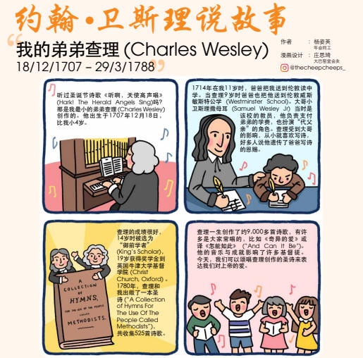

0695 Amazing Love (And Can It Be) _Charles
Wesley 怎能如此 SAGINA
▲
| 簡介
And
can it be that I should gain |
|
In a compact poetic manner, this text exclaims the mystery of God's
grace extended to sinners who turn to Christ in faith. These sinners
receive the righteousness of Christ and can approach the Lord's throne
in confidence. Such is the amazing love of God in Christ! Like so
many of Charles Wesley's hymn texts, "And Can It Be" is full of
allusions to and quotations from Scripture; a few of the more obvious
texts are Philippians 2:7, Acts 12:6-8, Romans 8:1, and Hebrews 4:16.
Wesley's use of metaphors is also noteworthy – he deftly contrasts
light and darkness, life and death, slavery and freedom, and especially
Christ's righteousness and our unrighteousness.
The tune SAGINA borrows its name from a genus of the pink
family of herbs, which includes baby's breath and the carnation. Sing
this tune vigorously and in parts, especially at the refrain; singers
should be sure to keep the melismas legato, especially in lines 5 and 6.
|
|
|
【怎能如此】
詩集：青年聖歌 II，19
|
|
1 And can it be that I should gain
An int'rest in the Savior's blood?
Died He for me, who caused His pain?
For me, who Him to death pursued?
Amazing love! how can it be
That Thou, my God, should die for me?
Refrain:
Amazing love! how can it be
That Thou, my God, should die for me!
2 'Tis mystery all! Th'Immortal dies!
Who can explore His strange design?
In vain the firstborn seraph tries
To sound the depths of love divine!
'Tis mercy all! let earth adore,
Let angel minds inquire no more. [Refrain]
3 He left His Father's throne above,
So free, so infinite His grace;
Emptied Himself of all but love,
And bled for Adam's helpless race;
'Tis mercy all, immense and free;
For, O my God, it found out me. [Refrain]
4 Long my imprisoned spirit lay
Fast bound in sin and nature's night;
Thine eye diffused a quick'ning ray,
I woke, the dungeon flamed with light;
My chains fell off, my heart was free;
I rose, went forth and followed Thee. [Refrain]
5 No condemnation now I dread;
Jesus, and all in Him is mine!
Alive in Him, my living Head,
And clothed in righteousness divine,
Bold I approach th'eternal throne,
And claim the crown, through Christ my own. [Refrain]
Amen.
Sing Joyfully, 1989
|
我主離開天上寶座，無窮恩惠 白白賞賜， 謙卑虛己彰顯慈愛，流血救贖亞當後嗣， 恩典憐愛無邊、無涯，罪人如我 竟蒙扶持! 奇異的愛，何能如此我主，我神竟為我死!
我靈受困在牢獄中，被罪包圍，黑暗重重； 得蒙救主 照亮我心，我靈甦醒，我心光明， 枷鎖脫落，心靈獲釋，起來前進，跟隨主行。 奇異的愛，何能如此我主，我神竟為我死!
不再定罪，除盡憂愁，主愛豐盛，是我所有。 永活主裡，基督為首，穿起 義袍聖潔無垢， 坦然無懼到寶座前，公義冠冕 為我存留。 奇異的愛，何能如此我主，我神竟為我死!
|

 |
| |
|
http://www.chinesebaptist.us/676473
怎能如此，像我這樣罪人，也能蒙主寶血救贖？
主寶血救贖？因我罪過使祂受苦，因我罪過使祂受死；
奇異的愛！何能如此，我主我神竟為我死？
主竟拋棄，天上榮耀寶座，白白恩典何等無限！
捨去己身成全大愛，救贖可憐亞當後代！
恩典憐憫，何等無限，我主我神將我尋回。
我的心靈，多年被囚捆綁，被罪包圍幽暗無光；
主眼發出復活榮光，使我覺醒光滿牢房！
鎖鏈斷落，心得釋放，我起來跟隨主前往。
不再定罪，今我不再畏懼，耶穌與祂所有屬我！
我活在永活元首裡，穿起公義聖潔白衣，
坦然進到神寶座前，因我救主，我得榮冕。
這首詩歌是查理•衛斯理（Charles Wesley,
1707-1788）作詞，並在1738年首次出版。他出生傳道人家，在十九位弟兄中，他是第十八位。初生時，身體衰弱，反應遲鈍，直到五歲才一鳴驚人、他有超人的智慧和記憶力。他雖然生長在物質貧乏的家庭，但他母親管教嚴厲，從小就教導他們禱告及背誦聖經，並訓練孩子們自治，八歲時隨長兄赴倫敦就學，名列全校第一，自此他的學業全在獎學金下完成。在他就讀牛津大學時，一度曾遠離主，偏行己路。他的哥哥約翰（John
Wesley）當時已是屬靈的基督徒，前來規勸，兩人發生衝突，不歡而散。事後他再三省思，並在神前尋求，終於澈底改變。他與一群友伴在校中成立「衛理」團契，是為衛理公會的前身。

查理·衛斯理多年和他弟兄分擔許多旅行佈道事工，但是他遺留給教會最大的財富還是詩歌。他一生寫了超過六千首的詩歌，今日很少有英文詩本中會沒有他的作品。查理·衛斯理的詩歌不但表達出極深敬拜的感情，他的詩歌並且有極豐富聖經主要教的解說。主後1788
年查理過世，享年八十。其著名的聖詩有：「神聖主愛 Love Divine, All Loves Excelling」，「天使報信 Hark！the Herald
Angels Sing」，「基督耶穌今復生 Christ The Lord Is Risen Today」，「奇異的愛 And Can It Be That I
Should Gain」等。
湯姆士·坎伯（Thomas
Campbell，1777-1844）於1825年為此歌譜上曲調。他原是北愛爾蘭長老會的牧師，於1807年到美洲。他主張教會合一。1809年，在華盛頓附近的一次會議，他提出要回到聖經的教訓，才能達到真正的合一。他們同心成立華盛頓基督徒聯合組織（Christian
Association of
Washington），他提出“宣言”。他們無意另立教會，只想成立一個組織，推動合一。他的兒子亞歷山大（全家遷居美國）脫離長老會，讀到他父親起草的“宣言”，竟不謀而合。但坎伯害怕這聯合會變成新宗派。1810年10月，長老會大會在匹次堡舉行，坎伯提出合一，受到厲害的禁止，其它團體仇視日增。因此，他們於1811年在百魯舒仁（Brushrun）成立“新約教會”，選長老（監督）、執事。他們認為受浸是禮儀，但後來查考聖經才知道是重要的事。1812年坎伯和妻子連同父母和妹妹等在水牛溪（Buffalo
Creek）受浸。這又引起宗派更加敵視，只有浸信會贊同，而且提議百魯舒仁教會與他們聯合。但後來又分裂了。坎伯主張舊的權威不及新約、浸禮是得救的條件、牧會信徒無分階級區分等，在1827
年正式從浸信會中分裂出來。這在浸信會的歷史上是重要的一頁。
湯姆士·坎伯亦是蘇格蘭十九世紀抒情詩人，作家。其最有名的詩句：“寧為人妒，不為人憐。（It Is Better To Be Envied Than
Pitied）”
文摘自：校園bbs，聖詩史源考，古今聖詩漫談
https://en.wikipedia.org/wiki/And_Can_It_Be

https://www.cac-singapore.org.sg/wp-content/uploads/2020/02/%E6%88%91%E7%88%B1%E9%AA%91%E9%A9%AC.pdf
https://www.cac-singapore.org.sg/wp-content/uploads/2020/04/p20-%E2%80%A2-CAC-News-4_JohnWesleyComic.pdf
http://www.cac-singapore.org.sg/wp-content/uploads/2020/04/p24-%E2%80%A2-CAC-News-5_JohnWesleyComic.pdf
https://www.umcdiscipleship.org/resources/history-of-hymns-and-can-it-be-that-i-should-gain
Charles Wesley
"And Can It Be That I Should Gain," by Charles Wesley;
The United Methodist Hymnal, No. 363
And can it be that I should gain
An interest in the Savior's blood!
Died he for me? who caused his pain!
For me? who him to death pursued?
Amazing love! How can it be
That thou, my God, shouldst die for me?
“And Can It Be That I Should Gain” is perhaps one of the most joyfully poignant
hymns penned by Charles Wesley (1707-1788). On Whitsunday (Pentecost), May 21,
1738, three days before his brother John experienced his heart “strangely
warmed,’ Charles was convalescing in the home of John Bray, a poor mechanic,
when he heard a voice saying, “In the name of Jesus of Nazareth, arise, and
believe, and thou shalt be healed of all thy infirmities.” The voice was most
likely Mr. Bray’s sister who felt commanded to say these words in a dream.

Anglican hymn writer Timothy Dudley-Smith, notes that the following then
happened:
Charles got out of bed and opening his Bible read from the Psalms: “He have put
a new song in my mouth, even praise unto our God,” followed by the first verse
of Isaiah 40, “Comfort ye, comfort ye my people, saith your God.” He wrote in
his journal, “I have found myself at peace with God, and rejoiced in the hope of
love Christ” (Dudley-Smith, 1987, 1).
The statement from Mr. Bray’s sister sparked within Charles a conviction like he
had never felt before. Moved and convicted in spirit, Charles wrestled with
these words until he came to rest in his faith, knowing that it is by faith we
are saved (Ephesians 2:8).
Soon after this conversion experience, he wrote two hymns in celebration of the
"amazing love" he had come to know: "And Can It Be that I Should Gain" and
"Where Shall My Wondering Soul Begin?" (United Methodist Hymnal, 342)
There has been some debate as to which hymn was written first, but most current
scholarship accepts the latter as the first hymn written by Charles after his
conversion experience. No matter its place in the chronology of Wesley's output,
"And Can It Be" has been and remains one of his most remarkable hymns,
expressing like no other the rapturous joy of receiving salvation.
The text of the hymn is fairly straightforward. Wesley opens with an
exclamation, "And can it be that I should gain an interest in my Savior's
blood!" These words are followed by a rhetorical question, "Died he for me — who
caused his pain?" Both are typical of Charles's poetic style.
The imagery he uses for each stanza is poignant and, particularly in the
case of stanza four, is reminiscent of both Peter's and Paul's miraculous
release from prison as told in Acts 12 and 16, respectively.
The first stanza
expresses wonder and amazement at the redemptive act of God and his offering of
free grace to all, even those "who caused his pain." This wonder is further
emphasized by the repeated phrase "For me" in lines three and four.
The second stanza
continues this sense of awe with its opening line, "'Tis mystery all: th'
Immortal dies!" Here, Charles captures the paradox of the Paschal Mystery (the
redemptive death and resurrection of Christ), saying that even the chief of the
angels cannot fathom the depth of this love divine.
In stanza three,
Wesley speaks of the incarnation, echoing Philippians 2:6-8 in lines three and
four, "Emptied himself of all but Love, and bled for Adam's helpless race."
Stanza four
compares humanity's newfound freedom from sin to that of Peter's miraculous
release from prison. Wesley borrows a line from a popular story of romantic
fiction from his day, Eloisa to Abelard, by Alexander Pope (1688-1744), "Thine
eye diffused a quickening ray," to symbolize God's love and power coming down to
release the captives (The Canterbury Dictionary).
In stanza five,
Wesley speaks of the present justification we now have in Christ and our future
glorification in the life to come. The first line, "No condemnation now I
dread," alludes to Romans 8:1 (NIV), "Therefore there is now no condemnation for
those who are in Christ Jesus."*
The hymn first appeared in John Wesley's 1739 hymnal, Hymns and Sacred Poems.
Since its first publication, it has been included in most Methodist hymnals and
in the hymnals of many other Protestant denominations.
Aside from the omission by John of the original fifth stanza in his 1780 hymnal,
the hymn has remained in its original form. This missing stanza speaks of
personal assurance of salvation. Perhaps Wesley omitted it because of its overly
personal tone and its relatively small contribution to the overall theme and
structure of the hymn. Its personal character may be most appropriate in some
more evangelical settings, but is of little consequence to the general
worshiping community.
*Verses marked NIV are from the New International Version (NIV) Copyright ©
1973, 1978, 1984, 2011 by Biblica, Inc. Used by permission. All rights reserved.
FOR FURTHER READING:
“And Can It Be That I Should Gain.” Hymnary.org, https://hymnary.org/text/and_can_it_be_that_i_should_gain
Dudley-Smith, Timothy. A Flame of Love: A Personal Choice of Charles Wesley’s
Verse. London: Triangle SPCK, 1987.
Timothy Dudley-Smith. "And can it be that I should gain." The Canterbury
Dictionary of Hymnology. Canterbury Press, accessed May 29, 2018, http://www.hymnology.co.uk/a/and-can-it-be-that-i-should-gain.
Young, Carlton R. “And Can It Be That I Should Gain.” Companion to the United
Methodist Hymnal. Abingdon Press, 1993.
DeAndre Johnson is a master of sacred music graduate, MSM ’09, of Perkins School
of Theology, Southern Methodist University, studying hymnology with Dr. C.
Michael Hawn. He now serves Christ Church Sugar Land (United Methodist) in Sugar
Land, Texas, as Pastor of Music and Worship Life.
Notes
Scripture References:
st. 2 = Phil. 2:7-8
st. 3 = Acts 12: 6-8, Acts 16:25-26
st. 4 = Rom. 8:1, Heb. 4:16
In a compact poetic
manner, this text exclaims the mystery of God's grace extended to sinners
who turn to Christ in faith. These sinners receive the righteousness of
Christ and can approach the Lord's throne in confidence. Such is the amazing
love of God in Christ! Charles Wesley (b. Epworth, Lincolnshire, England,
1707; d. Marylebone, London, England, 1788) wrote his powerful and joyful
hymn text in 1738 in the days immediately following his conversion to belief
in Christ (May 21); he sang it with his brother John (b. Epworth, 1703; d.
London, 1791) shortly after John's "Aldersgate experience."
"And Can It Be" was first
published in john Wesley's Psalms and Hymns (1738). It is subtitled
"Free Grace" in John and Charles Wesley's Hymns and Sacred Poems (1739).
Traditionally one of the great hymns of Methodism, this text appears in a
number of modern hymnals.
Like so many of Charles
Wesley's hymn texts, "And Can It Be" is full of allusions to and quotations
from Scripture; a few of the more obvious texts are Philippians 2:7, Acts
12:6-8, Romans 8:1, and Hebrews 4:16. Wesley's use of metaphors is also
noteworthy – he deftly contrasts light and darkness, life and death, slavery
and freedom, and especially Christ's righteousness and our unrighteousness.
Liturgical Use:
Service of confession and forgiveness; adult baptism; in conjunction with
doctrinal preaching; many other occasions.
Several members of the
Wesley family are significant figures in the history of English hymnody, and
none more so than Charles Wesley. Charles was the eighteenth child of Samuel
and Susanna Wesley, who educated him when he was young. After attending
Westminster School, he studied at Christ Church College, Oxford. It was
there that he and George Whitefield formed the Oxford "Holy Club," which
Wesley's brother John soon joined. Their purpose was to study the Bible in a
disciplined manner, to improve Christian worship and the celebration of the
Lord's Supper, and to help the needy. Because of their methods for observing
the Christian life, they earned the name “Methodists.”
Charles Wesley was
ordained a minister in the Church of England in 1735 but found spiritual
conditions in the church deplorable. Charles and John served briefly as
missionaries to the British colony in Georgia. Enroute they came upon a
group of Moravian missionaries, whose spirituality impressed the Wesleys.
They returned to England, and, strongly influenced by the ministry of the
Moravians, both Charles and John had conversion experiences in 1738 (see
more on this below). The brothers began preaching at revival meetings, often
outdoors. These meetings were pivotal in the mid-eighteenth-century "Great
Awakening" in England.
Though neither Charles nor
John Wesley ever left the Church of England themselves, they are the
founders of Methodism. Charles wrote some sixty-five hundred hymns, which
were published in sixty-four volumes during his lifetime; these include Collection
of Psalms and Hymns (1741), Hymns on the Lord's Supper ( 1
745), Hymns and Spiritual Songs (1753), and Collection of Hymns
for the Use of the People called Methodists (1780). Charles's hymns are
famous for their frequent quotations and allusions from the Bible, for their
creedal orthodoxy and their subjective expression of Christian living, and
for their use of some forty-five different meters, which inspired new hymn
tunes in England. Numerous hymn texts by Wesley are standard entries in most
modern hymnals; fourteen are included in the Psalter Hymnal.
Charles's elder brother
John also studied at Christ Church College, Oxford, and was ordained a
priest in the Church of England in 1728. A tutor at Lincoln College in
Oxford from 1729 to 1735, Wesley became the leader of the Oxford "Holy Club"
mentioned above. After his contact with the Moravian missionaries, Wesley
began translating Moravian hymns from German and published his first
hymnal, Collection of Psalms and Hymns, in Charleston, South
Carolina (1737); this hymnal was the first English hymnal ever published for
use in worship.
Upon his return to England
in 1738 Wesley "felt his heart strangely warmed" at a meeting on Aldersgate
Street, London, when Peter Bohler, a Moravian, read from Martin Luther's
preface to his commentary on the epistle to the Romans. It was at that
meeting that John received the assurance that Christ had truly taken away
his sins. That conversion experience (followed a few days later by a similar
experience by his brother Charles) led to his becoming the great itinerant
evangelist and administrator of the Methodist "societies," which would
eventually become the Methodist Church. An Anglican all his life, John
Wesley wished to reform the Church of England and regretted the need to
found a new denomination.
Most of the hymnals he
prepared with his brother Charles were intended for Christians in all
denominations; their Collection of Hymns for the Use of the People
called Methodists (1780) is one of the few specifically so designated.
John was not only a great preacher and organizer, he was also a prolific
author, editor, and translator. He translated many classic texts, wrote
grammars and dictionaries, and edited the works of John Bunyan and Richard
Baxter. In hymnody he is best known for his translation of selections from
the German hymnals of Johann Crüger ('Jesus, thy boundless love to me"),
Freylinghausen, and von Zinzendorf ('Jesus, thy blood and righteousness"),
and for his famous "Directions for Singing," which are still printed in
Methodist hymnals. Most significant, however, is his well-known strong hand
in editing and often strengthening his brother Charles's hymn texts before
they copublished them in their numerous hymnals.
--Psalter Hymnal
Handbook, 1988
===========================
And can it be that
I should gain. C. Wesley. [Thanksgiving for Salvation.]
Written at Little Britain, in May, 1738, together with the hymn, "Where
shall my wondering soul begin?" on the occasion of the great spiritual
change which C. Wesley at that time underwent. His diary of that date gives
minute details of the mental and spiritual struggles through which he
passed, evidences of which, and the ultimate triumph, are clearly traceable
in both hymns. It was first published in J. Wesley's Psalms and Hymns,
1738, and again in Hymns and Sacred Poems, 1739, p. 117, in 6
stanzas of 6 lines. When included in the Wesleyan Hymn Book, 1780,
stanza v. was omitted, the same arrangement being retained in the revised
edition 1875, No. 201. It has passed from that hymnal into numerous
collections in Great Britain and most English-speaking countries.
Stevenson's note on this hymn, dealing with the spiritual benefits it has
conferred on many, is full and interesting (Methodist Hymn Book Notes,
p. 155). Original text in Poetical Works, 1868-72, vol. i. p. 105.
-- John Julian, Dictionary
of Hymnology (1907)
SAGINA
Composer: Thomas Campbell (1825)
Published in 107
hymnals
Tune
“Sabina” by Thomas Campbell (1777-1844), Published in 1825
William Kirkpatrick
Thomas Campbell (1777-1844)Thomas Campbell’s tune “Sagina” is almost
universally associated with “And Can It Be.” Thomas published the tune in
1825 as one of 23 original tunes in a collection titled The Bouquet (in
which all of the tune names used botanical terms). Sagina was a plant that
grew on the thin rocky soil surrounding Rome. There is some confusion among
scholars as to whether this Thomas Campbell is the same person referred to
as “the poet” whose poems were published in various hymnals.9 The birth and
death dates seem to correspond, so it is possible that this Thomas is indeed
the same person who was famed for his poetry, classical verse translations,
and essays like “On the Origin of Evil.”

Notes
SAGINA, by Thomas
Campbell... is almost universally associated with "And Can It Be." Little
is known of Campbell other than his publication The Bouquet (1825),
in which each of twenty-three tunes has a horticultural name. SAGINA
borrows its name from a genus of the pink family of herbs, which includes
baby's breath and the carnation. Sing this tune vigorously and in parts,
especially at the refrain; singers should be sure to keep the melismas
legato, especially in lines 5 and 6.
http://www.congsing.org/and_can_it_be.html
Free Grace
Charles Wesley, 1738
Addressed to God
|
And can it be that I should gain |
|
|
an int’rest in the Savior’s blood? |
Lev. 17:11; Luke 22:20; Rom. 5:9 |
|
Died he for me, who caused his pain? |
Rom. 5:10; 8:7; Heb. 12:3 |
|
For me, who him to death pursued? |
|
|
Amazing love! How can it be |
|
|
that thou, my God, shouldst die for me? |
Acts 20:28 (see WCF 8.7) |
|
|
|
|
’Tis myst’ry all! Th’Immortal dies: |
John 12:34; Rev. 1:18 |
|
who can explore his strange design? |
Rom. 11:33–34 |
|
In vain the first-born seraph tries |
1 Pet. 1:12 |
|
to sound the depths of love divine. |
|
|
’Tis mercy all! Let earth adore, |
Eph. 2:4 |
|
let angel minds inquire no more. |
|
|
|
|
|
He left his Father’s throne above |
|
|
(so free, so infinite his grace!), |
|
|
humbled himself (so great his love!), |
Phil. 2:8 |
|
and bled for all his chosen race. |
1 Pet. 2:9 |
|
’Tis mercy all, immense and free; |
|
|
for, O my God, it found out me. |
Luke 19:10 |
|
|
|
|
Long my imprisoned spirit lay |
Is. 42:7; Zech. 9:11; Gal. 3:22–23 |
|
fast bound in sin and nature’s night; |
Is. 61:1; 1 Cor. 2:14 |
|
thine eye diffused a quick’ning ray; |
Ps. 36:9; Ps. 80; Prov. 16:15; John 8:12 |
|
I woke, the dungeon flamed with light; |
Acts 12:6–9 |
|
my chains fell off, my heart was free; |
|
|
I rose, went forth, and followed thee. |
|
|
|
|
|
No condemnation now I dread; |
Rom. 8:1 |
|
Jesus, and all in him, is mine! |
Song 2:16; Eph. 1:3; Phil. 3:8 |
|
Alive in him, my living Head, |
Rom. 6:11; Col. 2:19 |
|
and clothed in righteousness divine, |
Is. 61:10; Zech. 3:4; Eph. 6:14 |
|
bold I approach th’eternal throne, |
Heb. 4:16 |
|
and claim the crown, through Christ, my own. |
2 Tim. 4:8 |
Since God has revealed wonderful things about his plan of salvation, it
is our privilege as believers to treasure them up and to ponder them in
our hearts. We wonder at the eternal agreement of the Trinity in the
covenant of redemption; we wonder at God’s foreknowledge, election,
justification, adoption, sanctification, and glorification of his
saints; we wonder at how he providentially ordered history to prepare
for the Messiah’s work; we wonder at how the benefits of that work were
communicated unto the elect of all ages; we wonder at how the Son of God
was manifested in the flesh, vindicated by the Spirit, seen by angels,
proclaimed among the nations, believed on in the world, and taken up in
glory. The list goes on and on. But, because we see in a mirror dimly,
it must be admitted that all these wonders remain, to some extent,
abstractions for us in this life. Experientially, the most amazing thing
about salvation is that it is for
me.
-
“God has appointed for
me another offspring instead of Abel,” declared Eve (Gen. 4:25,
alluding back to the gospel in 3:15).
-
The aged mother of Isaac declared, “God has made laughter for
me” (Gen. 21:6).
-
Similarly, Jacob: “I am
not worthy of the least of all the deeds of steadfast love and all the
faithfulness that you have shown to your servant” (Gen. 32:10).
-
And so it is with all the saints, from David (2 Sam. 7:18) to Mary
(Luke 1:48–49) to Paul (1 Tim. 1:15) to us.
We are struck by the personal nature of salvation not because we are
individualistic or egotistic but because, of all the elements in the
story of salvation, the one we have witnessed most directly is our own
unworthiness.
In this hymn I, the Christian convert, humbly muse before God over how
preposterous it is—humanly speaking—that he should go to such lengths to
save me.
The syntax reflects my bewilderment, beginning as it does with a
coordinating conjunction (what does the “and” coordinate?) then
stumbling over the prepositional phrase “for me,” uttered three times in
the first stanza, including its closing rhyme. One gauge of mercy’s
immensity and freeness is that it “found out me” (stanza 3). In
stanza 4 the poet, writing just days after his own conversion in May
1738, vividly describes it using metaphors of liberation from prison and
“quickening” (that is, the giving of life). Such articulate testimony
emboldens. Even as it helps the unconverted to imagine the possibility
of conversion, it reminds the converted of how foolish it would be to
fall back into fear when God’s grace has proven itself so lavish. “What
then shall we say to these things? If God is for us, who can be against
us? He who did not spare his own Son but gave him up for us all, how
will he not also with him graciously give us all things?” (Rom. 8:31–32)
Wesley’s poetry in its exuberance (the first three stanzas are
riddled with interjections) could easily overpower a tune any less
colorful than itself.
SAGINA is the most vocally challenging of the tunes discussed on
this website. It is long, it is melismatic,
it is rhythmically unpredictable, it lacks melodic repetition, it
includes sustained high notes, and it contains so many leaps that at too
fast a tempo one could yodel to it. And yet, in our experience, wherever
there is the motivation to learn it (usually among those still
enthusiastic about their own conversions and who still find grace
mysterious) congregations enjoy success. For all its difficulty, SAGINA
is congregationally conceived: the sense of the tune is carried by the
congregation, not the accompaniment, and ordinary people can sing it.
The first two lines perform a melodic somersault as the poem
contemplates facts that turn human notions of justice on their head. The
first four syllables of the second line reproduce the general contour of
the last four syllables of the first line, but upside down. Similarly,
just as the first four syllables of the first line rose in scalar ascent
from “do,” so the last four syllables of the second line fall in scalar
descent to what is nearly a new “do” (the C-sharp in the alto makes the
music flirt with a new tonal center). Thus the second line is, loosely
speaking, both the inversion and the retrograde of the first line, and
we end the second line in a place that is simultaneously like and unlike
where we began.

The pitch D and its corresponding harmony, having asserted themselves so
decisively at the end of line 2, linger in line 3 only to be dislodged
in line 4 by the first appearance of a C chord (the very harmony that
will support the climax in line 8). In this way line 4 prepares for an
authentic cadence on
the tune’s real “do” at the exact midpoint of the tune, where the
cadence from the end of line 2 reappears, transposed to the home key.
Line 5 picks up the pace at the awestruck question “How can it be?”
After recalling the downward C–to–E jump from line 1, we proceed to sing
the five pitches with which line 2 ended, but in half the time (two
syllables instead of four, in the space of five quarter-notes instead of
ten). Line 6 is all fast notes, melismas, and ascent. Then the refrain
in lines 7–8 spreads its wings in sustained ascent over polyphonic motion
in the lower voices (imagine a folk version of the strategy Handel
employed at “King of Kings and Lord of Lords” in the Hallelujah Chorus).
Best of all, however, is the first note of line 5. There could be no
clearer setting of the fifth stanza’s “bold I
approach th’eternal throne” than this high half-note, resounding as it
does on the downbeat to
make the most of the poem’s metrical irregularity here. “Such is the
confidence that we have through Christ toward God” (2 Cor. 3:4).
https://pastorhistorian.com/2010/10/07/and-can-it-be-a-theological-and-devotional-analysis/
Originally
titled “Free Grace,” this hymn is one of several hymns by Charles Wesley
that is still widely sung in the present day. Although we do not know
exactly when “And Can It Be” was written, it is usually associated with a
very early period linked with the Charles Wesley’s conversion.
(1) Regardless
of when it was written, the song clearly describes the experience of
conversion and the wonder of one who is still amazed “That Thou, my God,
shouldst die for me?”. Tyson points out the repeated use of “for me” in
this hymn as evidence of the impact of the reading of Martin Luther’s Galatians commentary.
(2)
1. And can it be that I should gain
An interest in the Savior’s blood?
Died He for me, who caused His pain—
For me, who Him to death pursued?
Amazing love! How can it be,
That Thou, my God, shouldst die for me?
Amazing love! How can it be,
That Thou, my God, shouldst die for me?
Wesley is
clearly amazed at the extravagant grace of God evident in his own
salvation. He is amazed that the One whom his own sins had caused his
death would have offered his life up for him. Wesley puts himself into
the place of the angry crowd that cried out “Crucify Him!” and whom Peter
indicted on the Day of Pentecost of having crucified and killed by their
hands (Acts 2:23). This thought causes Wesley to cry out “Amazing love!”
and question in the words on which the modern title to the hymn is based:
“How can it be, That Thou my God, shouldst die for me?” Wesley’s
attribution of death to God is at first a shocking statement. He wished
it to be so. It is doubtful that Wesley was himself espousing a
patripassianism in these words. Instead, he wishes those who sing
this hymn to understand the amazing love of God that resulted in the death
of the Son of God, the God-man, Jesus Christ. This expression, as used by
Wesley, is thoroughly orthodox as it reflects the hypostatic union of the
divine and human natures of Jesus. What is said of one nature can be said
of the other since the two natures are united in one hypostasis or
person. Scripture also speaks this way of the death of Jesus when
Acts 20:28 records the apostle Paul exhorting the Ephesian elders “to care
for the church of God, which he obtained with his own blood.” Here, the
blood of God refers to the blood of Jesus, the God-man.
2. ’Tis mystery all: th’Immortal dies:
Who can explore His strange design?
In vain the firstborn seraph tries
To sound the depths of love divine.
’Tis mercy all! Let earth adore,
Let angel minds inquire no more.
’Tis mercy all! Let earth adore;
Let angel minds inquire no more.
Again in stanza
two, Wesley probes the depths of the mystery of the death of the Son of
God for us. Here Wesley juxtaposes immortality and death. These two
obviously do not belong together, but Wesley places them together to
emphasize the “mystery” of the atonement. The depth of this mystery is
highlighted by Wesley’s speculative description of angelic attempts to
understand the “depths of love divine.” This is no doubt a reflection
upon 1 Peter 1:12 which describes the gospel as “good news . . . into
which angels long to look.” Wesley is content to put an end to the
speculation with the declaration that it is simply a mystery of mercy.
3. He left His Father’s throne above
So free, so infinite His grace—
Emptied Himself of all but love,
And bled for Adam’s helpless race:
’Tis mercy all, immense and free,
For O my God, it found out me!
’Tis mercy all, immense and free,
For O my God, it found out me!
In the third
stanza, Wesley explores the kenosis or
“self-emptying” of Christ in the incarnation. The amazing love of God
is seen in that it caused the Son to leave “His Father’s throne above.”
This demonstrates the freeness and infinite nature of His grace.
Philippians 2:5-8 seems to be the Scriptural backdrop for this stanza.
These verses describe the depths to which the Son has descended in the
incarnation. Wesley reveals an understanding of the meaning of the Greek
underlying the language of Philippians 2:7 in the Authorized Version. The
phrase “made himself of no reputation” translates the Greek ekenosen which
literally means “he emptied himself” (see the HCSB which translates it
this way). Wesley evidently understands this for he says that the Son
“Emptied Himself of all but love” in the incarnation. The climax of the
incarnation, however, is seen in the hymn (as in Philippians 2:8) in
Christ’s death on the cross. He “bled for Adam’s helpless race.” Again,
the hymnist is forced to confess that the mercy of God alone is the source
of this amazing love. The personal nature of the evangelism of the
Wesleys is seen in the use of “me” throughout the hymn. That Christ died
“for me” is repeated three times in the first stanza, and in this third
stanza the mercy of God is said to have “found out me!” twice. The
personal emphasis is even more evident in stanzas 4-6.
4. Long my imprisoned spirit lay,
Fast bound in sin and nature’s night;
Thine eye diffused a quickening ray—
I woke, the dungeon flamed with light;
My chains fell off, my heart was free,
I rose, went forth, and followed Thee.
My chains fell off, my heart was free,
I rose, went forth, and followed Thee.
In stanzas 4-6,
Wesley seems to offer his own testimony from his experience of
conversion. This has caused many scholars to conclude that this hymn was
written soon after Wesley’s conversion. It is important to note that
although the language is profoundly personal, it also deeply biblical and
theological. Wesley’s view of his pre-conversion state was that of an
“imprisoned spirit” bound by both sin and nature. Wesley draws on the
imagery of a prisoner bound by chains in a dungeon. This is an apt image
of the state of mankind as described in Ephesians 2:1-3.
And you were dead in the trespasses and sins in which you once walked,
following the course of this world, following the prince of the power of
the air, the spirit that is now at work in the sons of disobedience– among
whom we all once lived in the passions of our flesh, carrying out the
desires of the body and the mind, and were by nature children of wrath,
like the rest of mankind. (ESV)
This picture of
mankind as dead in “trespasses and sins” and “by nature children of wrath”
could be the source for Wesley’s “fast bound in sin and nature’s might.”
Giving credence to this theory is the next line where Wesley introduces “a
quickening ray” emitted from the eye of God which caused Wesley to awaken
from his slumber of sin and death. The language of quickening or “making
alive” is present in the Authorized Version of Ephesians 2:1 and 4. “And
you hath he quickened, who were dead in trespasses and sins; . . . Even
when we were dead in sins, hath quickened us together with Christ.” The
quickening of the sinner resulted in a dungeon now inflamed with light,
chains being broken, and a free heart. Wesley’s response to the
quickening work of God was to rise up and follow the Christ who is the
subject of this hymn. This combination of the biblical images of life,
light, freedom from sin, and freedom of heart testify of a profound
understanding of the transformation that takes place at regeneration.
5. Still the small inward voice I hear,
That whispers all my sins forgiven;
Still the atoning blood is near,
That quenched the wrath of hostile Heaven.
I feel the life His wounds impart;
I feel the Savior in my heart.
I feel the life His wounds impart;
I feel the Savior in my heart.
Before Wesley’s
conversion, he longed for assurance of forgiveness. This longed for
assurance has now come in the presence of the Holy Spirit. There may be
an allusion to the inward witness of the Spirit in 1 John 5:10, but is
largely an experiential reality which Wesley expresses here. The “small
inward voice . . . whispers all my sins forgiven.” Though deeply
experiential, the basis for this experience is the objective work of
Christ on the cross. It was Jesus’ “atoning blood” which “quenched the
wrath of hostile heaven.” This vivid imagery of the death of Christ
satisfying the wrath of a holy God is seen in the Scripture’s use of the
word “propitiation” in Romans 3:25, 1 John 2:2, and 1 John 4:10. The word
“propitiation” means “to satisfy wrath.” Christ on the cross
propitiated a holy God on our behalf.
6. No condemnation now I dread;
Jesus, and all in Him, is mine;
Alive in Him, my living Head,
And clothed in righteousness divine,
Bold I approach th’eternal throne,
And claim the crown, through Christ my own.
Bold I approach th’eternal throne,
And claim the crown, through Christ my own.
Wesley begins
his final stanza with words which reflect a familiarity with Romans 8:1
“There is therefore now no condemnation for them which are in Christ
Jesus.” These hope-filled words provide an opportunity for reflection
upon the imputation of Christ’s righteousness in justification. The
reason that the believer need not fear God’s condemnation is that we are
united to Jesus Christ through faith “Jesus, and all in Him, is mine.”
This includes His righteousness, as Wesley specifies that the now alive
sinner is “clothed in righteousness divine.”
This evokes biblical imagery from Genesis 3 when God provided coats of
skin to cover the nakedness of Adam and Eve to Joshua the High Priest with
dirty clothes for whom God provided a change of raiment in Zechariah 3.
These words also reflect a careful reading of 2 Corinthians 5:21 which
states, “For he [God] hath made him [Jesus] to be sin for us, who knew no
sin; that we might be made the righteousness of God in him.” It is on the
basis of this clothing with the righteousness of Christ that we are
enabled to approach “th’eternal throne” boldly.
Also alluded to
here is the work of Jesus, our Great High Priest, in Hebrews 4:16 which
allows the author to exhort his readers: “Let us therefore come boldly
unto the throne of grace, that we may obtain mercy, and find grace to help
in time of need.” Wesley closes the hymn with the phrase “through Christ
my own.” This is an apt summary of the hymn’s teaching and of Wesley’s
theology. All our blessings are “through Christ” (the objective work of
Christ) and they are by faith “my own” (the experiential possession).
Because of its rich doctrinal and devotional quality, it is no wonder that
this hymn has stood the test of time and remains a favorite by
congregations in the 21st Century.
The enduring relevance of this hymn was brought home to me in recent years
at the Together for the Gospel conferences (2008 and 2010) when a crowd of
4,000 plus mostly men under the age of 40 sang this hymn with deep
affection at the top of their longs. Tears streamed down men’s faces and
arms were uplifted as they sang of the amazing love of God as seen in the
death of Christ for their sins.
1. John R. Tyson, Assist Me to
Proclaim: The Life and Hymns of Charles Wesley (Grand Rapids: Wm.
B. Eerdmans Publishing Co., 2007), 49.
https://zh.wikipedia.org/wiki/%E6%9F%A5%E7%90%86%C2%B7%E5%8D%AB%E6%96%AF%E7%90%86
維基百科，自由的百科全書
跳至導覽跳至搜尋
查理·衛斯理（Charles Wesley，1707年12月18日－1788年3月29日）是18世紀英國循道運動的領袖之一，約翰·衛斯理的弟弟。查理·衛斯理主要以創作大量聖詩著稱。
查理・衛斯理（Charles
Wesley，1707年12月18日－1788年3月29日）是18世紀英國循道運動的領袖之一，父親撒母耳・衛斯理（Samuel
Wesley）是聖公會牧師和詩人。循道會的創辦人約翰·衛斯理（John Wesley）的弟弟。兒子是音樂家撒母耳・衛斯理（Samuel
Wesley）。是音樂家撒母耳・塞巴斯蒂安・撒母耳（Samuel Sebastian
Wesley）的祖父。儘管理查和他兄弟約翰關係十分親密，但他們不是常常同意對方的信念。特別是查理堅決反對違反有關英國聖公會為他們規定的想法。查理・衛斯理創作了七千多首聖詩，被稱為詩中之聖 [1]。他的詩被世界各地的教會所使用。他布里斯托的禮拜堂（The
New Room Chapel in Bristol）是他事奉生活的一部分。他的屋也在附近，也歡迎參觀 。[2]
幼年時期[編輯]
查理·衛斯理生於的厄普臥（Epworth），林肯郡(Lincolnshire)，英格蘭1791年卒於倫敦。他的父親撒母耳·衛斯理（Samuel
Wesley）是聖公會的牧師，畢業於牛津大學，母親蘇撒拿・安尼斯理（Susanna Annesley） [3]重視嚴謹的教育，是一位能幹，賢淑，透過她的優良家教，約翰·衛斯理在家裡在十九位弟兄中，他是第十八位。八歲的時候，他父親把他送到倫敦的威斯敏斯特學校（Westminster
School）。
一七二六年，查理·衛斯理因在威斯敏斯特學校成績卓越，被保送到牛津大學（Oxford
University） [4] 的基督教會學院（Christ
Church
College）讀書。1727年，查理與他的同學在牛津大學成立祈禱會。一七二九年，他哥哥約翰・衛斯理加入成為領袖，並將自己的信念放進祈禱會。這個祈禱會專注於研究聖經和聖潔的生活。其他的學生嘲笑他們，說他們是「聖潔會」（Holy
Club），循道友（Methodists）。他們極其詳細地在聖經研究，意見和過有紀律的生活方式，同時他們也作許多慈善的工作，傳福音，特別去探訪監獄裡的囚犯，向他們分享上帝的愛。喬治·懷特腓（George
Whitefield）也加入這個組織。查理畢業於古典學和文學碩士。1735年，跟父親和哥哥進入教會服事。
航行到美洲[編輯]
在1735年10月14日，查理・衛斯理和他哥哥約翰・衛斯理乘坐鮮敏號（Simmonds）輪船前往美洲的喬治亞（Georgia）從事差傳工作。同船有的便雅憫・殷涵（Benjamin
Ingham）和查理士・廸拉莫（Charles Delamotte）。 查理・衛斯理被任命為局長印第安人事務（Secretary for
Indian
Affairs），約翰・衛斯理留在薩凡納（Savannah）。根據查理・衛斯理的日記條目，他到了1736年3月9日，在附近的一個弗雷德里卡堡，聖西門島（Fort
Frederica, St. Simon's Island）作駐軍和殖民地的牧師 [5]。然而，事情並沒有變成好，他不受當地的開荒者歡迎，因為他們都是放縱自己，宴樂度日的人。加上查理・衛斯理受到很大程度上的拒絕。在1736年8月16日，查理・衛斯理離開喬治亞洲，到南於羅來納洲（Charleston,South
Carolina），航行再也沒有回到喬治亞的殖民地了。 [6] 1736年12月3日，查理・衛斯理病倒，在風浪中乘船回到英國。
查理・衛斯理在1738年5月21日經歷了一個屬靈上的轉變。他在三天前胸膜炎復發，他的哥哥和其他弟兄姊妹在前一晚到查理的家為他的病熱切禱告。神便醫治了查理，讓他的身體慢慢康服。
查理・衛斯理感到有股重新的力量，讓他將福音傳給普通百姓。他又寫作了很多的詩歌讚美，打動和感化很多英國剛硬的心靈，而他的詩歌也越來越出名。
1739年，當時循理會受到聖公會的敵對，將約翰・衛斯理，喬治·懷特腓和查理等人列入黑名單，他們不可以進到英國聖公會的教堂作宣講。受到喬治·懷特腓公開演說的影響，衛斯理弟兄走到廣場和街道上宣講福音
。[7]他們試過在不同的地方受到暴徒的包圍和襲擊，破壞循理會的聚會點，但查理被聖靈充滿，勇敢宣講神的福音，帶領很多人信耶穌。
1745年，查理・衛斯理不能再巡迴布道，要在信徒的培訓工作上下苦工，因此他決定專心牧養教會。他停止在廣場公開講道和繁忙的旅程，在外頭奔馳，因為他需要注重身體的健康。查理定居在聖美利勒邦波恩教會（Marylebone
Parish Church）。在他臨終前，他找約翰．哈雷（John
Harley）來，跟他說「先生，無論世界的人會怎樣說我，我都活了，也死了，我是英國教會的成員。我求你把我埋在墓地。」他死後，他的屍體被運到聖公會墳場（Parish
Burying Ground）安葬，為他立紀念石放在美利勒邦高街（Marylebone High
Street）的公園。他的其中一個兒子撒母耳成為教會的管風琴手 。[8]
婚姻與兒女[編輯]
在1749年4月，查理娶了比他年輕18歲的莎拉・奎寧（Sarah
Gwynne1726－1822），又稱作莎莉（Sally） 。[9] 他是富裕的奎寧爵士（Sir
Marmaduke Gwynne）的女兒。後來這位爵士被威爾斯（Howell Harris） [10] 說服成為循道友。1749年4月8日，查理・衛斯理為查理和莎莉主持婚禮。1749年9月，他們搬入有里斯托爾（Bristol）的小屋。莎莉陪伴著弟兄們在英國告地的傳福音旅程。1756年後，查理沒有太多的旅程到偏遠的地區，主要是在倫敦和布里斯托爾之間穿梭
。[11] 1771年5月，查理得到倫敦教會的姊妹支持，向他的一家提供了一座房子，莎莉和他的大兒子便搬進與查理一家團聚。1778年，全家已經從布里斯托爾轉到倫敦的房子，在切斯特菲爾德街1號，馬里波恩（1
Chesterfield Street,
Marylebone）。他們一家一直住在這大屋，直到查理死後仍住著。在布里斯托爾的房子仍然保留，並己重修，但倫敦的戶子在19世紀中已被拆毀了 。[12] 查理和莎莉一共生了九個孩子﹐其中六個在襁褓中去世。只有三個孩子是倖存的。查理．衛斯理（Charles
Wesley 1757年至1834年），莎拉・衛斯理（Sarah Wesley 1759年至1828年），她也像她的母親喜歡被稱莎莉（Sally）,
還有撒母耳・衛斯理（Samuel Wesley 1766–1837）。在1753年至1768年，他們的孩子約翰（John），瑪麗亞瑪莎（Martha
Maria）, 蘇珊娜（Susannah）,斯莉娜（Selina ）和約翰詹士（John James）都是埋葬在布里斯托爾。
撒母耳和查理是苗子天才，像他們的父親，成為管風琴和作曲家。查理大部分職業生涯都是作英國王室的私人管風琴。撒母耳成為了世界最有成就的音樂家，稱為「英國莫扎特」。除此之外，查理的兒子，撒母耳・塞巴斯蒂安・衛斯理（Samuel
Sebastian Wesley），是19世紀最重要的英國作曲家之一 。[13]
在查理斯的青少年及初成時期，他主要是把古典的拉丁文翻譯成有權能的對聯，直到1738年，他抒情詩調的專長是在他的轉化中啟發出來。 [14] 查理斯有龐大的文學著作，提到他以未出版的詩一共寫了約九千首詩歌，當中包含了27,000節及180,000句。 [15] 他的寫作很有生氣及無限制的。普遍人認為其哥哥［［約翰•衛斯理］］寫詩的措辭雖然比他的較優美，但他寫的詩詞所引申出來的觀點同樣有價值，特別在他的風格及詞彙裡更能感染及觸動其他原創者。 [16] 查理斯至少有24首的匿名的詩歌作品。而他的讚美詩小冊子也非常流行及出名的。 [17] 他與哥哥約翰•衛斯理聯名出版了500首詩詞，有Hymns
and Sacred Poems of 1739, 1740, and 1742, the Collection of Psalms and
Hymns of 1743, pp.206-88 of Vol.3 of the Collection of Moral and Sacred
Poems (1744), Hymns on the Lord’s Supper of 1745, and Hymns of Petition
and Thanksgiving of 1746。 [18]
查理斯的日記[編輯]
查理斯衛斯理於牛津大學時期開始寫作。如他的兄弟一樣，查理斯盼望透過寫作來調節他的生活及靈命成長。這一方面，查理斯受到他哥哥約翰的鼓勵，開始撰寫「日記」，這亦是他開始寫作的重要一步，大多反映他內心的想法及反省。查理斯早期的日記的內容較為全面，但後來卻變得簡潔和不規則，弗蘭克·貝克更認為他的日記「極不均衡」。而他的刊物亦反映出他的內省能力明顯地較他哥哥約翰弱很多。因此，縱然查理的刊物由1729年開始產生，卻在1849年才第一次被印行。 [19]
內容方面，從查里斯的日記中，可見他詳盡地記錄了他多次探監的情況，顯示出他似乎十分關懷那些在監禁中的犯人。而查里斯在世最後一本著作《為判刑的罪犯禱告》（Prayers
for Condemned
Malefactors）也是為犯人寫的。當他七十八歲時，即1785年4月28日，他所代禱的十九個罪犯，在逝世前全部認罪悔改。查理莊重地對待犯人的死亡問題，對自己也如此。不了解查里斯的人會以為他反覆不斷地述及死亡，是不健康的和病態的。他的日記中多次提到死的來臨和想像死亡的情景，但是他對死亡的聯想與一般人不同，是喜樂而又平安的，一點也不像那些患了憂鬱症的人。其實一般循道會的信徒均如此，在告別人間時都是平妻和喜樂的，特別感受到神的同在。查理斯為到循道會信徒有這種慷慨歸回天家的精神感到光榮。他更認為這對於他們所傳揚的福音真理是一個美好的見證。有一位英國的醫生對查里斯這樣說：「大多數人害怕死亡，但是我從未遇到像你們這樣的循道會的人。他們幾乎沒有一人畏懼死亡，他們臨終時顯得安寧和平靜，聽更由命至最後一秒鐘。」查理斯女兒憶述他父親在末了一段日除的情景：當身邊的人問查里斯有甚麼需要時，他總是這樣回答：甚麼也不需要，惟獨需要基督。他堅持有基督同在就不一樣（Not
with Christ）。 [20]
查理斯的信件[編輯]
查理斯的信件是第二項重要的資料來了解他及他的事奉，通常也是他離家時寫給他家人的。而托馬斯·傑克遜形容他的信件為「樸實的書信」，很可能是他在用字上較他哥哥約翰的作品少了許多波蘭語。這些信件表現了查理斯在家庭中的一面，成為了解他私生活的重要來源，而他的信件與日記合併起來更能全面了解其工作。 [21]
可能是詩歌方面的成就太卓越，縱然查理斯投放了很大心血在宣講的服侍上，可是後世卻忘記了他作為傳道牧者的身份。跟他的兄長約翰同樣，由於他們都承傳敬虔主義的傳統，故此他並不是十分情願地進行露天的布道模式。自1739年6月24日，他打破當時的框框，開始把街頭、花園、任何的戶外場地變成宣講的會場，放棄了必然在教堂內教導的想法。儘管查理斯個性較為沉默，現場說教時卻能面對群眾放聲宣講，而他美妙的聲線及詩人般的演講方式亦令他的布道十分有效。他在一封信上感謝上帝以此方法來祝福他的服侍，他說「神使我抬起我的聲音時像小號，使所有會眾都能清楚聽到我所說的；而我會在結論時以歌唱邀請罪人。」在1751年8月9日，查理斯的信件顯示了他在教導工作上的限制，他感到教導並不是他主要的事奉，神知道他一切的困難，知道他的負擔，並會親自與他一同面對。這信件代表了查理斯事奉焦點的過渡，已由教導轉為創作詩歌。 [22]
在查理•衛斯理的一生中，他堅持在五十年內每日寫10句詩歌歌詞，而隔天他便能完成一首詩歌。 [23] 在1764年，他完成了一共5冊與福音書及使徒行傳有關的手寫詩歌，裡面約3,500首聖詩。他的詩歌及文本校對是多數放在Representative
Verse of Charles Wesley的著作中。 [24] 他臨終前五年，雖然他只寫了300首詩詞的文學作品，卻有部份著作能夠真正出版。 [25]
查理斯有另一種的方法去表達及開發人內心的意念，就是他創作的詩歌。他也被譽為循道會中最甜美的歌手，他的詩歌相較他其他方面的貢獻亦是最持久。
在教會歷史上，查理斯被稱為「詩中之聖」，與以撒華滋（Isaac Watts）、芬妮.克羅斯比（Fanny
Crosby）同被視為偉大的詩人，三人的詩歌都推動了同時代的復興運動，也為那時代的教會帶來祝福。查理斯創作之詩歌對後世有重大的影響，其驚人之處不單在於詩歌的質素，更在於出品的數量。雖然查理斯寫下了許多的詩歌，但有超過四百首是屬於不同的基督教團體，有關這些詩歌的著作權仍不太清晰，其中包含了一些重要的問題。 [26]
首先，就是有關詩歌作者的爭議。有部份詩歌不知道原創人是查里斯還是約翰。縱然兩兄分都有協議不在分開創作的詩歌上指明作者，但一些學者會為到聯合創作的議題些爭論不休。其次是，解決什麼是「詩歌」，「詩歌」可被稱為「已出版的詩歌」嗎？或是被人唱頌過的都是「詩歌」？或是未被唱頌過的「聖經中選取的短詩」（Short
Hymns on Select Passages of
Scripture）（1762）也計算在內？兩兄弟在「讚美詩」及「聖詩」之間沒有提出正式的區分，兩者之間的分別亦不在於寫作的方式，而在於應用上。 [27]
查理斯持續又規律地寫詩，詩歌總數估計有7300首，比以撒華滋和芬妮.克羅斯比的詩歌都較多被採用。在1762年至1766年，他寫超過6,248首聖詩，平均一年寫約1,250首。多數的著作都是在50歲內誕生，豐盛時期是在他30多歲。雖然如此，縱使50歲後不是太多生產，但他在1763年至1766年亦不斷完成及修訂他的聖詩集。在1774-1787年更發行了第七次的修訂版聖詩集。 [28] 從他的日記中，也可發現他寫詩歌的習慣，他視寫詩為每日必須的工作，也是生活的一部份。（READER）他的人生經驗豐富，屬靈經歷深厚，接觸的範圍比許多人廣泛；所以他的詩歌題材也是多方面的，包括救贖和重生的詩歌、靈命追求的詩歌、有關教會生活的詩歌等。其中《耶穌，靈魂的愛人》流行之廣，影響之大，超過了他所有的作品。 [29] 在他將近離開世上的前幾天，他向他的太太以口述的傳遞方式來寫作最後的一首詩，詩中的內容提到縱然面對軟弱無能的身軀，但對他唯一的盼望就是上帝。 [30]
十八世紀文學[編輯]
一如當時的習慣，查理斯沒有提供影響其思想或詩歌的來源. Alexander Pope
是其中一位最影響查理斯作品的現代人. 查理斯有彈性的風格有機會受Matthew Prior 的影響，而Alexander
Pope較為沉穩的風格則對查理斯有較少影響. 查理斯在信中表達對自己影響較深的詩人，如Cowley, Spenser, Milton, Prior,
Young. [31] Edward
Young 在two parts的作品中力證永恆及不朽的重要性、死亡的無可避免。查理斯喜愛讀Edward Young的詩集是一個疑問.
由Young的作品中, 查理斯認識到如何善用聖經、經典、俗語及重要的經歷去建構18世紀的用語.
古典 (the classics)[編輯]
查理斯被視為古典的喜好者, 此領域的恩賜更超越約翰,
故此他參與更正及調整約翰有名的作品Notes on the New Testament. 拉丁文及古典用語較多出現於查理斯的詩歌, 然而John
Milton (1604-1674)及其他在宗教詩歌的先峰者而言, 查理斯作品中古典建構的成分則較低. 某程度上，他是新古典主義者,
力圖以較通俗的方式表達古典作品，成為18世紀文學轉接期的領航人物。 表達出追憶古典作品的情懷在查理斯的詩歌及寫作中比比皆是，由Vergil’s
Aeneid、Horace, Homer, Plato 等的作品皆自然融合在作品裡.
基督教傳統[編輯]
James Johnson
曾形容希臘及羅馬文化、猶太及基督教文化的溶合連接著19世紀的新古典主義. 某些人物如Shaftesbury, Bolingbroke, Gibbon
不接納基督教信仰，認為心靈是由基督教信仰及古典知識所交織而成. 新古典主義的文化氣氛則貶抑此等作家為教父傳統及非正統, 不論他們是否有信仰.
查理斯的作品較少直接引用早期教父的著作. 作品充滿英國聖公會的文化, 尤其是使用其信仰信條、公禱書. 查理斯兩次在寫作中為「因信稱義」的信條而辯護.
在講道中查理斯較少引用英國聖公會的教義. The Homilies 則被包含在其靈修生活、學習及在循道宗的事工裡.
公禱書是查理斯在聖公會中所善用的傳統來源. 他善用公禱書於個人靈修及公開敬拜之中.
曾經有一段時間, 由1739至1740 中, 查理斯操練靜默禱告。查理斯在晚期也會不定期地使用公禱書. 他認為可按情況決定是否視用公禱書.
查理斯的Short Hymns on select passages of
scripture (1762年出版) 顯示公禱書仍然是其個人反思及詩辭的來源. 他的生命及詩集表達出古典和基督教傳統美妙的融合.
他對教父、聖公會風格的欣賞及應用被收錄於衛斯理的作品集裡, 形成其信心及詩歌.
聖經的應用[編輯]
J.E. Rattenbury 曾提出衛斯理的詩歌包含了聖經的應用.
查理斯在詩詞、講壇及日常生活中的用語皆受聖經的字詞所影響. 詩歌裡名副其實地鑲嵌了很多來自聖經的典故,
作品合乎聖經不單在於準確地表達出聖經的教條和原則, 更是原汁原味地展示聖經. 查理斯最喜歡形容聖經為「神諭」, 一個強調聖經預表性的描述.
以聖經作為宗教及神學表達是查理斯的習慣, 所以查理斯稱呼聖經為「信心的法則」(rule of faith).
正是基於強調聖經的啟示性功能，神學性地表達神的話語與聖靈，查理斯的詩歌帶有濃厚的、活潑的、充滿生氣的聖經話語方向。對查理斯而言，聖經是恩典、是藉著聖靈與基督聯合的管道.
馬太福音9:20-21「來到耶穌背後」充份表達出其對聖經的深切欣賞. Unclean of life and heart unclean, How
shall I in His sight appear! Conscious of my inveterate sin I blush and
tremble to draw near; Yet through the garment of His Word I humbly seek to
touch my Lord.
查理斯一如奧古斯丁及路德等的神學家，皆採用以基督為中心的解經方式，以致從文學層面分析，其詩歌與同時期的奧古丁詩人大為不同。奧古斯丁風格由默想大自然以沉思神的偉大，而查理斯的作品中突顯十架上的聖潔、基督救贖世人，而非大自然;
他只聚焦於大自然的詩歌傳統，使其以基督及重要的神學主題 (如救贖、贖罪、捨己)為建構基礎。查理斯不只意譯經文於詩歌裡，更是在創作中加入自己的見解,
藝術性地處理經文, 按著聖經的主旨、以其神學理解去塑造歌詞.
神學理念[編輯]
在查理斯留下的大量寫作、書信及少量講章以外，詩歌最適合於研讀其神學思想，故其詩歌被形容為循道宗神學的最佳入門. 古典基督教神學由四方面定義救贖 一.
由職場及商業交易, 二. 法律的語言, 三. 潔淨的概念, 四. 軍事. 如何能更佳地表達聖經中的救贖呢? 詩歌可能是其中最好的神學表達,
基於其捕捉原來構造意念的過程, 正如查理斯的作品一樣, 以經文的字詞、短語及圖像去建構在人心中歌唱的神學表達。
查理斯的神學貢獻是其把詩歌與神學想像絶妙地配合. 查理斯經常使用犧牲的字詞去表達救贖, 例如「血」一詞在其晚期詩歌中出現達800次,
此來自「基督的血」, 「血」表達基督的死及其救贖 ,更展示出聖經的過去與現在的經驗結合: 「為我」而死的基督透過信心與renovation,
成了「在我裡面的基督」(Christ in me). 查理斯神學的中心可在其寫於1741年的日記, 指出永恆福音的真理是普世救贖及基督徒的成聖.
普世救贖[編輯]
「全部」得救贖在其晚期的詩歌中被提及超過三百次, 同時也提及基督的死所帶來普世性的果效.
基督捨生的死成就無盡的贖罪. 普世救贖的重要論點是阿民念主義中有關揀選及預定的教義. 他相信透過基督的死, 所有人都被揀選去得拯救,
故此那些不能來到神面前的人須要在自身中找回神恩典的暗記. 強調原罪的教義: 他形容原罪為「罪性」、「在懷裡的罪」等,
認為「原罪」、個人的罪及實際的罪沒有分別. 他認為前者會引申至後者的發生, 故此他認為「我為雙重的罪而傷心」. 他頗重視「基督的血洗淨我的罪」,
他的關注點在於內在、罪性的更新. 他對救贖的關注強調脫離過往罪惡的自由及現在克勝罪惡的能力, 是原罪與實際上所犯的罪之解放.
「拯救」在查理斯的角度是「完全的」、「完成的」或「到達極致」的拯救, 當中表達勝過「罪惡權勢」的自由.
救贖過程的果效是「取消」舊有的罪惡或「打破罪惡的枷鎖」. 以上都表 達出其對神恩典的樂觀態度- 一種以「完全的愛」為終極目標的恩典.
基督徒的完全[編輯]
成聖是查理斯福音的中心, 是透過基督的信心, 獲得公義的神學及邏輯 結果.
成聖是信心生命的果子. 成聖的字詞在其作品中出現壓倒性次數. 在晚期作品中, 聖潔及完全的字眼出現超過600次 (不包括暗示意思的句子)
基督徒成聖是根據約翰一書及希伯來書的真理, 強調信徒被神的愛充滿, 隨後是人意圦的更新, 以致「人非聖潔不能見神」.與其兄弟不同,
查理斯對完全的概念維持在不合格的異象, 忠心生命的完結就是人的內在回歸至天堂裡神的形象, 即是基督的形像或意念形成在基督徒裡. 正面來說,
其觀念能以潔淨及更新來表達, 然而完成的目標乃完全, 完全即聖潔、完全的愛或在內裡找到基督的豐富. 這種理解容易被誤解為: 信徒可以像天使般完美.
基督論[編輯]
查理斯持續地表達堅實的基督論, 透過使用舊約及新約的互相對照, 擴張及解釋基督的屬性.
最為人認識的是其建構基督在「我裡面」的體會. 查理斯使用傳統的系統以表達基督的位格及工作, 例如使用先知、祭司、君王代表其三位一體.
在其創意的詩歌創作裡, 共有超過五十個對基督的稱呼, 其重點在於基督的救贖, 並習慣使用以賽亞書52:
12-53:13中受苦之歌去形容基督的救贖工作. 他相信基督的工作在復活中完成, 然而復活的目標不是基督坐在上帝的右邊作天上的權管,
道成肉身的延續是基督成形在信徒生命裡. 基督復活的頂點, 包括其在天上的掌權, 是在完全的愛中.
同歸於一論[編輯]
查理斯的同歸於一論神學與早期教父有頗為相似的地方. 透過愛任鈕及其跟隨者,
救贖的主題在早期東方教會中變得更普遍. 在早期的作品裡, 查理斯主張基督徒的完全 (回歸至神的形象) 乃信徒唯一的需要,
而他以此作主題的講道介紹成聖為基督徒信心的重要部份, 並以同歸於一論形容基督徒的完全: 「發現人的墮落尤為重要,
以神的形象取代撒旦的形象是阻礙自由及健康的! 最重要的事乃在靈魂裡除掉惡者、再次得到重生、並以創造主的形象得以更新」
有關此效法基督主題的應用在其救贖神學及同歸於一論組成重要連繫. 效法基督是其同歸於一論的重要概念, 並且建立門徒訓練的路向.
基督僕人倒空自己的生活方式是指效法及模彷基督, 十架神學並沒有停於救贖, 而是向著十架的路、受苦神學去推進.
基督的十架要求人們背起自己的十架去跟隨祂, 而救贖, 在除掉罪的層面上, 雖然是完全或完成了, 仍然需要以信心的回應及忠心的屬靈果子作為完全,
十架進入信徒的生命後, 要求門徒付上沉重的代價. 查理斯以「救贖」一詞去描述基督完成及完成的工作.
透過其詩歌、戲劇、日記的形式表達出基督在人們作出回應之時巳被掛十架上. 他催促信徒要去符合神的期望. 其主張的「十架學校」(school of
the cross)並非以模彷基督的謙卑為主, 而是聚焦於基督的受苦及背上十架方面, 再次勉勵信徒去跟隨基督受苦的生命, 達致更像基督品格為目標.
While I thus my Pattern view, I shall bleed and suffer too, With the man
of sorrow join』d One became in heart and mind.
More and more like Jesus grow, Till the
Finisher I know, Gain the final Victor’s wreath, Perfect love in perfect
death.
查理斯強調背起十架是沉重的代價, 也是信徒生命的一部份. 在受苦中, 意志及動機被煉淨,
使之邁向基督徒的完全. 此說法好像每天放下自己的過程, 換句話說, 十架是迎接冠冕的預備. 以上看法在其馬可福音8:34 詩歌中融合: The
man that will Thy Follower be, Thou bidd’st him still himself deny, Take
up his daily cross with Thee, Thy shameful death rejoice to die, And
choose a momentary pain, A crown of endless life to gain.
很多學者認為查理斯的受苦神學較為極端; 把受苦及淨煉連結更是罕有的概念. 然而,
透過其獨有對基督徒成聖的關注、其頑疾的影響及愁緒、聖經中的信息, 查理斯發展救贖的概念至生活層面, 此乃大部份新教領袖不敢嘗試的.
若果受苦僕人的形象成為其對信徒主要的描述, 則沒有失去僕人身份的認同. 基督的跟隨者, 背起十架, 是被召去「滿足神的受苦」.
查理斯應用了保羅的用語, 表達出基督在被社會排斥的人、受壓迫的人、鄰捨身上被反映出來, 而減輕這群人的痛苦則是十架的復和作用.
查理斯有關於「好撒瑪利亞人」的詩歌及講道正表達了十架與基督徒服務的有力連結.
著名作品[編輯]
查理·衛斯理一生出版了5500首聖詩，其中有許多廣受歡迎：
其中有150首收錄在衛理公會聖詩集Hymns and Psalms中。
- Abbey, Charles J. (1892) Religious
thought in old English verse, London : Sampson Low, Marston, 456p.,
ISBN (?) 0-7905-4361-3
- Tyson, John R. (Ed.) (2000) Charles
Wesley : a reader, Oxford : Oxford University Press, 519 p., ISBN
0-19-513485-0
外部連結[編輯]
-
^ 陳福中編。《查理・衛斯理小傳》。香港：基督徒出版社，2000年。
-
^ The New Room Bristol –
John Wesley’s Chapel in the Horsefair
-
^ "Charles Wesley". BBC.
Retrieved 19 November 2013.
-
^ "Charles Wesley". BBC.
Retrieved 19 November 2013.
-
^ The Wesley Center Online:
The Journal Of Charles Wesley: 9 March – 30 August 1736
-
^ Ross, Kathy W. and Stacy,
Rosemary, "John Wesley and Savannah"
-
^ "Charles Wesley". BBC:
Religions. Retrieved 10 June 2013
-
^ "Charles Wesley". BBC:
Religions. Retrieved 10 June 2013
-
^ Cheetham, J. Keith (2003).
On the Trail of John Wesley. Edinburgh: Luath Press. pp. 95–97
-
^ Barry, Joseph (2010).
Temperley, Nicholas; Banfield, Stephen, eds. Music and the Wesleys.
Urbana: University of Illinois Press. pp. 141–146
-
^ Rack, Henry D. (2007).
Newport, Kenneth G.C.; Campbell, Ted A., eds. Charles Wesley: Life,
Literature and Legacy. Peterborough: Epworth. pp. 45–46
-
^ Forsaith, Peter S. (2010).
Temperley, Nicholas; Banfield, Stephen, eds. Music and the Wesleys.
Urbana: University of Illinois Press. pp. 161–162
-
^ Temperley, Nicholas
(2010). Temperley, Nicholas; Banfield, Stephen, eds. Music and the
Wesleys. Urbana: University of Illinois Press. pp. ix–xv.
-
^ Frank Baker, Charles
Wesley’s Verse: an introduction, (London: Epworth Press, 1964),9.
-
^ Frank Baker, Charles
Wesley’s Verse: an introduction,7
-
^ Frank Baker, Charles
Wesley’s Verse: an introduction,105
-
^ Frank Baker, Charles
Wesley’s Verse: an introduction,107
-
^ Frank Baker, Charles
Wesley’s Verse: an introduction,108.
-
^ Wesley, Charles, and
Tyson, John R. Charles Wesley : A Reader / Edited by John R. Tyson. New
York: Oxford University Press, 1989, 10-11
-
^ 陳福中編。《查理・衛斯理小傳》。香港：基督徒出版社，2000年，頁95-96
-
^ Wesley, Charles, and
Tyson, John R. Charles Wesley : A Reader / Edited by John R. Tyson. New
York: Oxford University Press, 1989, 12.
-
^ Wesley, Charles, and
Tyson, John R. Charles Wesley : A Reader / Edited by John R. Tyson. New
York: Oxford University Press, 1989, 13-14.
-
^ Frank Baker, Charles
Wesley’s Verse: an introduction,7.
-
^ Frank Baker, Charles
Wesley’s Verse: an introduction,8.
-
^ Frank Baker, Charles
Wesley’s Verse: an introduction,9.
-
^ Wesley, Charles, and
Tyson, John R. Charles Wesley : A Reader / Edited by John R. Tyson. New
York: Oxford University Press, 1989, 20-21.
-
^ Wesley, Charles, and
Tyson, John R. Charles Wesley : A Reader / Edited by John R. Tyson. New
York: Oxford University Press, 1989, 21.
-
^ Frank Baker, Charles
Wesley’s Verse: an introduction,9-10
-
^ Wesley, Charles, and
Tyson, John R. Charles Wesley : A Reader / Edited by John R. Tyson. New
York: Oxford University Press, 1989, 22.
-
^ Frank Baker, Charles
Wesley’s Verse: an introduction, 10
-
^ Baker, Charles, Wesley
Letters P.129, 14
https://blog.xuite.net/warrenlois/twblog/120139676
查理•衛斯理小傳 (Charles Wesley 1707∼1788) （上）
查理•衛斯理小傳 (Charles
Wesley 1707∼1788) （上）
在循道宗的三位創立人中，約翰•衛斯理是一位傑出的組織人才；懷特腓是一位大有能力的布道家；查理•衛斯理則是一位偉大的詩人，被稱為詩中之聖。他創作了七千多首詩歌；目前世界各地教堂所使用的詩歌，查理•衛斯理超過聖詩之父以撒華滋和聖詩之後芬妮•克羅斯比。
此外，查理•衛斯理又是一位大布道家，周遊英國各地，傳揚福音，帶領無數的人歸向基督。
第一章 當時的時代背景
在敘述查理•衛斯理生平之前，有必要交代一下他出生時的時代背景。
英國經過了長時期的宗教糾紛之後，到了十八世紀，英國的國教聖公會終於站穩了腳跟；國教、政府、王室已經聯成一體，
成為不可分割的了。為了鞏固英國國教的一尊地位，英國王室的法令和國會的法案不斷湧現，令人眼花繚亂，無非是要遏止天主教(Catholics)和異見者
(Dissenters)的活動。
這些政治的權力和世俗的影響力，對信徒的靈性生活毫無幫助，儀式和虛文是不能供應生命的。實際上，教會的情況是極其
荒涼冷淡，許多神職人員表現得非常鬆弛懶惰，大多數人精神渙散，酗酒、不守本位。一些神職人員的薪俸菲薄，要節衣縮食才能勉強維持生活。有些自甘墮落的神
職人員流連酒吧，不專心在講臺講道，更談不上去探望信徒。
出現這種情況，歸因於當時英國國教制度的不合理。在神職人員中，出現了待遇差別、貧富懸殊的現象。那些居於高位者，
養尊處優，把教區的工作交給那些年輕的、挨餓的年輕牧師去打理，這些年輕神職人員必須看上層主教們的臉色，因為下層神職人員的收入，仰賴上層聖品階級的施 捨。
英國聖公會的伯克利主教(Bishop Berkeley)坦承，那裡基督教在英國完全崩潰，嚴重的程度是任何基督教國家所未曾聽聞過的。
英國著名的法理學家威廉•伯勒斯頓爵士(Sir William
Blackstone)輪流到倫敦的每一間教堂去聽道，竟然聽不出講道者是一個基督徒，他們講道的內容完全不涉及基督的救贖大恩。
由於社會低下層對現實不滿，社會風氣腐敗，全國普遍出現酗酒的現象。在倫敦，每六棟民房平均就有一間酒吧。在英國，酒精的每年消耗量，從一七二七年的三百五十萬加侖，劇增至一七五一年的一千一百萬加侖。
最有歷史意義和政治意義的是，法國大革命和美國革命運動都發生在衛斯理兄弟的時期。英國的工業大革命雖然在他們未出生時已發生，但全速發展卻在衛斯理兄弟出生的時候，在這麼特殊的時代背景下，神興起了衛斯理兄弟倆人。
第二章 衛斯理的家族淵源
查理•衛斯理的祖先巴多羅繆•衛斯理(Bartholomew
Wesley)曾任聖公會牧師，原是一個騎士的兒子，他的妻子與他門當戶對，也是一個騎士的女兒。在清教徒得勢的年代，英國的查理士王子(Prince
Charles)--後來登基為查理士二世--在逃亡到法國之前，曾有一晚秘密投宿在巴多羅繆家裡。那時有一個鐵匠向那一教區的主任牧師告密，適逢主任牧
師在禱告，而且不停息地禱告，直至查理士王子脫險，逃逸到法國。
查理•衛斯理的祖父約翰•衛斯理(John
Wesley)--與查理的哥哥約翰•衛斯理同名不同人--在牛津大學攻讀東方文學。他曾因講道惹上官司，坐監好幾次，以致飲恨而死。
老約翰•衛斯理(Matthew Wesley)是倫敦一位很富有的外科醫生；另一兒子撒母耳•衛斯理(Samuel
Wesley)，亦即本書主角查理•衛斯理的父親。
撒母耳•衛斯理從先祖遺傳了兩樣愛爾蘭人的特性：抒寫押韻的詩和喜歡與人爭辯。查理•衛斯理就有父親的寫詩的遺傳因子。
一六二二年，英國執行統一法案(Actof Uniformity)，強迫每個牧師要向會眾公開表示，他同意英國國教公禱文(Common
Prayer)中所寫的一切；法案規定每個牧師必須由英國的國教按立，結果約有二千牧師拒絕服從統一法案而被革職，內中就有老約翰--查理•衛斯理的祖 父。
老約翰被革除牧職之後四個月，撒母耳•衛斯理生了下來；撒母耳一直在異見者(Dissenters)--或稱獨立教派的資助學校受教育。撒母耳十八歲時，父親老約翰逝世。
當獨立教派委派撒母耳•衛斯理撰文攻擊聖公會--英國國教--時，由於他深入研究聖公會的教義，加上他在獨立教派的一些不愉快經驗，撒母耳竟認同聖公會。在一個早晨，他向母親不告而別，前往牛津大學，在大學半工半讀，直至修畢學業，才在聖公會擔任牧師。
一六九七年，撒母耳•衛斯理被聖公會委派到林肯郡(Lincolnshire)的厄普臥(Epworth)地區任牧師。
厄普臥這個偏僻地區的區民，對於聖公會委派的牧師毫不友善，他們最反感的是撒母耳•衛斯理傾向保守黨的。特別是撒母耳•衛斯理的性格直率，說話不給人留情面，引起了當地居民對他的普遍敵視。
當地的居民向來仇視保守黨，撒母耳•衛斯理的親保守黨的談吐言論，惹來了一連串的災禍：他的牲畜被殘害；他的五穀被焚毀；後來他的房子被人縱火焚燒。據說所有的破壞都是出自同一批人。
撒母耳•衛斯理除了為人不夠圓滑外，脾氣又很暴躁，但是上述這些缺點，掩蓋不了他的優點和長處。作為一個牧師，他忠心職守，不時探望信徒，規勸灰心者，告誡犯錯者。他就是這樣不屈不撓地、毫不鬆懈地服事和牧養那一地方的群羊。
撒母耳•衛斯理喜歡寫詩。他的詩略嫌太長，他又不像他的兒子們--成為絕代的偉大詩人--肯花時間重寫，肯對每一個字進行修飾和斟酌，但他寫詩的效力卻是令人敬佩的，直至他老年時，身體癱瘓了，一雙手麻痺了，他仍以譜寫詩歌為樂。
撒母耳一生中最大的建樹，就是娶了蘇撒拿•安尼斯理(Susanna Annesley)為妻。蘇撒拿是這麼能幹、賢淑，透過她的優良家教，才教導出查理•衛斯理這樣一個偉大的詩人來。
說真的，約翰•衛斯理和查理•衛斯理能成為歷史上的偉大人物，應歸功於他們兄弟有一位偉大的母親。
第三章 童年的學習生活
查理•衛斯理是撒母耳•衛斯理和蘇撒拿的第十八個孩子。
根據懷赫德醫生（Dr.Whitehead）透露，查理•衛斯理是早產生下來的。查理•衛斯理一生下來，就被人用羊毛衣服包裹起來保暖，他既不會睜開眼睛，也不會哭，他的生命就是這樣戰戰兢兢地被延續和保存下來。由於他先天不足、底子很薄，一生孱弱多病。
查理•衛斯理是一七0七年十二月十八日出生的，當時蘇撒拿已經三十九歲。由於她養育了太多兒女，家庭經濟拮据，生活擔子把蘇撒拿壓得喘不過氣來。
一七0九年二月九日，撒母耳•衛斯理的住宅突然起火，起火的原因很可疑，約翰•衛斯理後來述及這場火災時，強調很明顯地有人在縱火。那場火蔓延得很快，有一個護士奮不顧身地抱出只有一歲大的查理•衛斯理。六歲大的約翰•衛斯理，則被人從窗口救出來。
查理•衛斯理和他的姐妹們從小就在家裡受到母親蘇撒拿嚴格的教導。
蘇撒拿對每一個孩子都很嚴厲，查理也不例外，查理若犯了過錯，蘇撒拿不惜用鞭打來懲罰他。蘇撒拿特別在順服的事上，要求得特別嚴格，她訓練孩子們從小就要懂得順服長輩。
她又訓練他們從小管理自己的生活，不貪食懶作，學習作一個自立的人。她除了定時給孩子們三餐外，不許他們在其間吃零食。
蘇撒拿又要求孩子們在任何事上要誠實。在查理還不會說話的時候，蘇撒拿就教他用手勢來表示對神的感謝；在查理懂得說話的時候，她又教他用主禱文來禱告。查理•衛斯理遵照母親的囑咐，每天背誦主禱文兩次，起床時一次，臨睡前一次。
在這樣一個孩子眾多的家庭裡，查理小時在物質方面是被忽略的，他從來沒有穿過一件比較像樣的、整齊的衣服。
查理•衛斯理從五歲起，開始由他母親教他識字。開始學習的第一天，母親蘇撒拿從早上到晚上，寸步不離地陪伴著他，很
細心地教他認英文字母。在第一天，查理就展露了他非凡的才華和超人的聰明，一天之內就用字母拼出了許多英文字。到了第二天，查理竟能用英文字母，拼讀聖經
第一卷《創世記》第一章第一節"起初神創造天地"。在讀熟了第一節之後，他又拼讀第二節"地是空虛混沌，淵面黑暗，神的靈運行在水面上。"查理的記憶力和
智慧是這麼突出，連他母親蘇撒拿也驚訝不已。
到了查理八歲的時候，他父親把他送到倫敦的威斯敏斯特學校(Westminster
School)就讀，該校校長是查理的大哥撒母耳(Samuel，與父親同名)，這樣撒母耳可以對查理善加照顧。查理已往從未和大哥一起住過，兩人在倫敦
相處了一段日子之後，建立了濃厚的手足之情。撒母耳是聖公會的牧師，他的嚴謹的、有紀律的生活成為查理良好的榜樣。查理•衛斯理又受到他大哥撒母耳的影
響，對詩歌特別喜愛，後來他真的往這方面發展，成為絕代的詩人。這時候，查理•衛斯理的另一個哥哥約翰•衛斯理(John
Wesley)，則在倫敦的查特學校(Charterhouse School)求學。
查理•衛斯理在威斯敏斯特學校讀了五年書之後，在考試中成績優異，榮獲"御前學者"(King
Scholar)的名銜，從而他的學費獲得基金會的資助。查理除了在學習上有了飛躍的進步，在同學中也備受敬重，在這個擁有四百名學生的學校，他被推選為 學生的總隊長
(Captain)，成為校長和學生們溝通的居間人士。這項榮譽的職位，給他從小就鍛鍊領袖才能的機會。
一七二六年，查理•衛斯理因在威斯敏斯特學校成績卓越，得到每年一百英鎊的獎學金，並被保養到牛津大學 (Oxford
University)的基督教會學院(Christ Church
College)讀書。查理的曾祖父、祖父、父親和兩個兄弟都是該學院的校友，整個家庭和基督教會學院實有悠久的歷史淵源。
查理在威斯敏斯特學校時受到了大哥嚴格的約束，如今在牛津大學突然有一百英鎊的年收入，生活開始放鬆。當年一百英鎊
是一個龐大的數目，這筆錢一直維持到他結婚的日子。那時候他另一哥哥約翰•衛斯理正在毗鄰的林肯學院(Lincoln
College)當院士(Fellow)，約翰就想在靈性上多幫助弟弟查理。但是查理卻認為約翰是在干預他的自由，大聲嚷道："莫非你要我立刻搖身一變，
成為一個聖人？"
一七二八年，約翰•衛斯理在父親負責的厄普臥(Epworth)教區協助父親料理教會事務，中間也回到牛津大學探望
弟弟查理。奇怪得很，查理對於生命的切身問題的態度開始嚴肅起來，願意虛心聆聽約翰的開導。查理把自己的轉變歸因於某些人的代禱，他甚至推斷代禱者是他的 母親蘇撒拿。
約翰•衛斯理出乎愛心的話語深深地在查理的心裡運行工作；查理於是向哥哥約翰坦白，在這些放浪形骸的年間，他迷戀一位女伶，如今他停止向女伶獻殷勤，結束了這段不成熟的愛情。
查理在神面前經過了一段時間的尋求，主在他心中作工，他的生活行為有了明顯的改變，他開始說服兩三個同學，每主日去領聖餐，他們並遵守學校所規定的校規和學習方法。
查理躍然在生活上有見證，但大學裡的同學多年來早已不再墨守成規，於是把查理視為嘲笑的對象，稱呼循規蹈矩的查理和他的朋友為循道友(Methodist)。一個循道友，就是一個以聖經的話語來規範自己的人。
第四章 成立了聖潔會
一七二八年底約翰•衛斯理回到故鄉尼普臥，在魯特(Wroot)教區擔任副牧師；查理仍留在牛津讀書，一種屬靈的責任感和使命感就從查理心中油然而生。
查理•衛斯理在牛津大學，找到了一些有心追求的人，成立了聖潔會(The Holy Club)。根據懷特腓(George
Whitefield)的說法，創會者包括查理•衛斯理、羅伯特•柯克漢(RobertKirkham)和威廉•摩根(William Morgan)。
查理等人成立了聖潔會之後，仍然希望約翰從魯特教區回來帶領聖潔會；查理不時向約翰傾訴他的屬靈情況。一七二九年一月，查理寫給約翰的信這麼說：
"當你不在這裡幫助我和輔導我時，我更應該凡事小心翼翼。實在是神在扶持我，我深信我會堅守在這崗位，直至我們相會的那一天。你是神用來幫助我的最合適的器皿。我深信神既然在我裡面動工，他將繼續地保守我，直至做成他的工作。"
聖潔會的成員除了每週守聖餐外，又互相幫助，殷勤讀書。
一七二九年十月二十一日，林肯學院院長摩利博士(Dr. Morley)發信通知約翰•衛斯理，說他為林肯學院的實習院士(JuNior
Fellow)和班長(Class Moderator)，必須常駐學院。約翰•衛斯理不敢怠慢，於一七二九年十一月二十二日從魯特教區趕回牛津大學報到。
約翰回到牛津大學，與查理重逢，快樂之情不在話下。查理在主面前，寧願隱藏自己的能幹和才華，謙卑自己；查理自願地服在約翰的權柄之下，讓約翰擔任聖潔會的領袖。
在約翰•衛斯理的帶領下，聖潔會的工作如火如荼地展開了。聖潔會的成員每天上午六時至九時集合在一起禱告，又勤讀聖經，每個人都對自己嚴加審查和反省。此外，每星期有兩天的禁食禱告。
當其他人嘲笑和戲弄聖潔會的成員時，聖潔會的成員表現得非常平靜，臉上總是露出喜樂和平安。他們又到監獄裡採訪犯人，他們那種忘我的獻身精神和俯就卑微的服事態度，在那時代是罕見的。
在那裡，懷特腓(George
Whitefield)正在牛津大學半工半讀，聽到聖潔會的成員所作的美好見證，很渴望認識這些聖潔會的弟兄們。懷特腓沒有料到，查理•衛斯理竟然主動地
邀請他共進早餐。懷特腓述及這件事："我很感恩地抓住這個機會。這件事實在是神的祝福；在我一生之中，這是最有益的一次會晤。"
查理•衛斯理接著把懷特排介紹給他哥哥約翰•衛斯理和其他聖潔會的成員。
懷特腓效法其他聖潔會的成員，到監獄裡去為犯人禱告；至於衛斯理兄弟兩人，則抓住每個機會，向監獄的犯人傳福音。
懷特腓後來成為神大用的器皿，是循道宗三大屬靈領袖之一（其他二人為約翰•衛斯理和查理•衛斯理）。有關懷特腓生平，可閱讀《懷特腓小傳》。
第五章 在喬治亞的日子
約翰•衛斯理向犯人傳福音的時候，立刻就考慮到前往美洲做差傳工作。約翰•衛斯理同時也想說服查理•衛斯理，和他一起到美洲的喬治亞(Georgia)去從事差傳工作。查理記載這件事如下：
"我已經拿到了大學的學位，只想在牛津大學度過一生。但是我的哥哥說服我陪他和一位奧格托普上校(Colonel James
Oglethorpe)到喬治亞殖民地去。"
一七三五年十月十四日查理•衛斯理和哥哥約翰•衛斯理搭乘鮮敏號(Simmonds)輪船前往美洲。同船的還有牛津大學聖潔會的成員便雅憫，殷涵(Benjamin
Ingham)和衛斯理兄弟的支持者查理士•迪拉莫(Charl Delamotte)。
鮮敏號在航行中遇到了狂風大浪，但在危難中，來自德國的二十六位摩拉維亞弟兄們(Moravians)，毫不驚慌，他們把一切的事交托神，對神有堅定的信心，他們流露出基督的生命，他們是那麼喜樂和平安。
一七三六年二月六日，查理•衛斯理踏上美洲的土地撒萬拿(Savannah)，翌日奧格托普上校將史寶 真堡 (AugustSpangenberg)介紹給查理•衛斯理。史寶真堡是美洲摩拉維亞定居地的領袖，在整個摩拉維亞弟兄會當中，其地位僅次於親岑多夫伯爵
(Count Zinzendorf)。查理•衛斯理停留在撒萬拿五星期，其間和摩拉維亞弟兄們有美好的交通，彼此分享每人從神所領受的。接著查理•衛斯理告別哥哥約翰
•衛斯理，前往菲特力加(Frederica)，在那裡擔任奧格托普的私人秘書兼當地的印第安人事務秘書(Secretary for Indian Affairs)。
查理•衛斯理雖然出任公職，但在他的心底裡，他自認是一個服事主的人，他認定當初到喬治亞的目的，是做差傳工作，並不是來作殖民官。
移民到喬治亞的拓荒者大部分都是從英國逃避債務來的。當時在英國每年有四千人因欠債被扣押。那些年間英國的法律對欠
債者很嚴酷，許多人一進了監獄就因疏於照顧和被虐待而喪命，少數人更因欠債上了絞架。查理的父親撒母耳•衛斯理，在生前曾因欠債坐過監，能平安出獄，算是
少數的幸運兒了。
查理•衛斯理雖然專心致志地履行牧師的職責，卻不受當地的開荒者歡迎，那些人厭倦神的道，喜歡放縱自己，宴樂度日。
查理對印第安人的差傳工作同樣沒有果效；印第安人的首長湯摩•奇西(TomoChici)大聲嚷道："菲特力加地方的基督徒是什麼榜樣：醉酒、毆打人、撒謊，我才不作基督徒！"看到那麼少人來參加主日崇拜，查理難免感到灰心和沮喪。
查理的性格根本不適合擔任秘書，當他為奧格托普寫了一天的信之後，他已經想打退堂鼓了，認為這和他原先到喬潔亞做的差傳工作背道而馳。
情況更加惡劣的是，與查理同船到喬治亞的威爾其夫人(Mrs. Welch)和霍克金夫人(Mrs.
Hawkins)為了削弱衛斯理兄弟對奧格托普上校的影響力，以便他們兩人可以擺佈和操縱奧格托普，就在查理和奧格托普之間搬弄是非，散布謠言。奧格托普
受了這兩個邪惡女人的唆使，就對查理的態度冷淡，不復信任他。後來更在生活上虐待查理，不准他私自烹調煮飯，不准他鋪木板睡覺，只允許他睡在光禿禿、冷冰 冰的地板上。
一七三六年七月二十六日，查理•衛斯理離開喬治亞洲，到南卡羅米納州(South
Carolina)的海港查理斯敦(Charleston)。在那裡，他看到了販買黑奴的陰暗面。由於所搭乘的輪船機件需要修理，輪船泊在麻薩諸塞州
(Massachusetts)的首府波士頓(Boston)。在波士頓，查理終於看到了美洲美麗的一面，那裡的教會接納他，請他講道六次，並且接連三個
主日，請他協助主持聖餐。意料不到的是，他突然在波士頓病倒了，那裡的弟兄姐妹請來多位名醫，為查理悉心治療，弟兄姐妹們的愛心令他深為感動。儘管抱病在
身，查理歸心似箭，在風浪交加下乘船回英國。航行中他一直是衰弱不堪，直至一七三六年十二月三日，輪船終於抵達英國。
第六章 靈性上的轉變
一七三七年初，摩拉維亞弟兄們的屬靈領袖親岑多夫伯爵到倫敦去，給查理留下很好的印象。查理在前往美洲的鮮敏號船
上，因看到摩拉維亞弟兄們在危難中能依靠神而喜樂和鎮定，很敬佩摩拉維亞弟兄們在靈性上的長進。查理協助親岑多夫伯爵撰寫摩拉維亞弟兄運動的歷史，還負責
教一位和親岑多夫一起到倫敦的彼得•波勒(Peter Boehler)英文。彼得•波勒則在靈性上輔助查理。
有一天查理生病了，彼得•波勒去看他，彼得問查理說，你是否盼望得蒙拯救。查理答說，是的。彼得再問查理，根據什麼理由你希望得救。查理解釋說，因為我曾盡自己的最大的努力去事奉神。彼得聽了，只是搖頭，一言不發。
查理看到彼得沉默不語，覺得彼得不厚道，未免有點苛刻。查理心裡想，難道我一切的努力是徒勞的嗎？難道彼得•波勒把我努力所做的一切完全抹煞、一筆勾銷嗎？這樣一來我還能有什麼得救的把握呢？
彼得•波勒是一位信心堅定的基督徒，為人單純和親切，當他寫信到德國給親岑多夫時，他這樣描述查理的屬靈情況："論
到在基督裡的信心，查理的認識並不比一般人強。他靠自己的行為稱義，他憑持他在神的事工上所做的一切，就想憑著這些宗教上的行為得救了。由於他對救贖沒有
正確的認識，他的心中備受折磨、煩惱不安。"
一七三八年四五月間，查理•衛斯理精神抑鬱、靈性下沉，他渴慕得著真正的滿足和安息；在身體方面，他非但胸膜炎的病
情不穩定，還有很嚴重的牙痛。當查理身心軟弱的時候，彼得•波勒很有愛心地來探望他，並不時為查理禱告。查理在彼得再來看他時，對彼得坦承，他發現自己裡
面並沒有真正的信心。查理經過了這些日子的痛苦經歷和內心的掙扎，結果主開啟了他的眼睛，給他發現的那條奇妙的道路--在基督裡的信心，就是人只能因著相
信主耶穌而得救。這成為查理•衛斯理一生很大的祝福和轉機。
查理的哥哥約翰在一七三八年五月三日的日記裡，記載了這歷史性的大事件："我的弟弟今天與彼得•波勒有了一席長談，神開啟了他的眼睛，使他能清楚地看見那活的信心的性質，即我們唯有本乎恩，才能得救。"
一七三八年五月四日，彼得•波勒為了要到美洲從事差傳工作，就告別了查理。
在彼得•波勒離開英國前三天，即五月一日晚上，正當查理•衛斯理臥病在床時，彼得•波勒和查理的哥哥約翰組織了一個會社，這個會社後來就在費達巷(Fetter
Lane)聚會。
五月十九日星期五，查理•衛斯理的胸膜炎復發，約翰•衛斯理和幾位弟兄姐妹在星期六晚上到查理的家裡為查理的病懇切
禱告；在主日，神奇妙地醫治了查理，他的體力從此逐步康復。神在這些日子中，實際上已經準備了一個適當的器皿。查理將以詩歌和講道，去打動和感化在英國眾
多的剛硬的心靈；他同時將與循道會的其他同工，在一個黑暗的時代，一起在英國點燃了復興的火焰。
第七章 成為巡迴布道家
查理•衛斯理得救之後，就分秒必爭地到各地去傳福音，竭盡所能地搶救失喪的靈魂。查理•衛斯理不是一個鋒芒畢露的大布道家，他傳福音只有一個目的，乃是搶救那些走向沉淪的人，而不是為傳揚自己的名聲。查理實在是一個收斂的、隱藏的神的器皿。
前文說過，查理•衛斯理由於早產，先天不足以致身體的底子很薄，但是為了傳福音，他不畏辛苦，長年累月騎上一匹馬，
馬不停蹄地走遍英國和愛爾蘭。他從英國的地極(Lands
End)動身，前往英國北部城市紐加塞耳(Newcastle)，其間往往順道訪問威爾斯(Wales)，或者逗留在愛爾蘭幾個月。
曾有一次查理在英國北部盤桓的六個星期內，前往三十個地方講道，包括伯明翰(Birmingham)、 雷菲爾德
(Sheffield)、列斯(Leeds)、紐加塞耳(Newcastle)、厄普臥(Epworth)、牛津(Oxford)、布里斯托
(Bristol)和倫敦(London)。當他到這些地方的時候，他並不是在走馬看花，游山賞月，而是每天平均要講四次道。他也不是輕聲細語地與人在切
磋神學，而是聲嘶力竭地呼喚罪人要迅速悔改，要罪人接受主耶穌做他們個人的救主。
當年循道會並沒有堂皇舒適的教堂，而英國的聖公會又把約翰•衛斯理、懷特腓和查理等人列入黑名單，不准他們踏入英國聖公會的禮拜堂講道。當查理要與農村裡的循道會的人一起崇拜或聚會的時候，往往要借用各種場地，包括廚房、穀倉、馬廄、礦坑等。
查理•衛斯理從來不浪費光陰，只要有空，不論在下榻的地方，或者在馬背上，他都利用時間來寫詩，並且寫出許多偉大的、感人的聖詩來。有十年之久，他沒有自己的家，可說居無定所，隨遇而安。他沿途向人借宿，只要有一席安身之地，他絕無半句怨言。
在佈道的時候，他遭遇了各種的危險。當他開始在溫斯伯利(Wednesbury)和格林斯比 (Grimsby)傳福
音的時候，他就受到了暴徒的包圍和襲擊。然而他開拓了工場，先在紐加塞耳建立循道會，又在窩平(Wapping)建成了一座循道會教堂。他到愛爾蘭許多地
方開荒，並在種種困難的情況下，在英國西南地區康瓦耳(Cornwall)展開工作，並取得了重大的果效。查理•衛斯理和約翰•衛斯理兩兄弟分工合作。一
般是查理作先頭部隊，在某一地方先打開了局面，有了循道會的信徒和同情者，然後約翰隨後來到，進行組織的工作，並作鞏固信徒的培靈工作。
查理•衛斯理在事奉上實在有聖靈的同在，他講道大有能力，許多人聽了他的道而歸向了基督。他的音樂恩賜也在傳福音聚會中發生作用，許多人就是聽到他的詩歌受感動而信主重生的。
在華朔(Walsal)，查理•衛斯理站在市場的階梯的上頭，向著流氓地痞傳福音；一些人的心如石頭般剛硬，但他所
傳的福音卻滿了天上的能力。查理常常敘述，在那些危難的日子，他好像保羅在以弗所和野獸搏鬥一樣。那樣艱難的工作，若是沒有聖靈的能力，實在沒有人能夠勝
任。那一天查理在華塑講道時，許多流氓暴徒拿石頭扔他；又把他從階梯上拖下來，把他打倒在地；然而他又走到階梯的頂級，為迫害他的人祝福。暴徒們再一次把
他拖下來，他又走上去大聲感謝神的救恩，然後他自己走下來，離開那個市場，如同主耶穌一樣，從他們中間直行過去。
在雷菲爾德(Sheffield)，暴徒拆毀了一間循道會的教堂，查理•衛斯理毫不退縮，借用教堂的鄰 居聚會，但整
個陰間的黑暗勢力糾集起來攻擊他。當查理和另一位大衛•戴生(David Taylor)弟兄坐上臨時講臺的時候，一個政府官員殷沙•嘉頓(Ensign
Garden)開口反駁，又說出褻瀆神的話。查理不理會他，繼續唱詩聚會。不久密集的石頭扔過來，擊中講臺和會眾。為了保障會眾的安全，查理就說："我要
到外頭去講道，正視這些攻擊我的人。"當查理走到外面的時候，暴徒們就拿石頭扔向他的臉孔。查理講完道，就代那些長期被魔鬼管轄的眾人禱告。當時有一個軍
官強行越過弟兄們，拔出一把利劍來威嚇他，查理看見劍尖對著他的胸部，就把衣服解開，讓胸膛迎著利劍。查理微笑著對軍官說："我是敬畏神的人，同時也尊重
君王。"那個軍官突然不知所措，失掉了力量，就走開了。
幾天之後，查理•衛斯理繼續在雪菲爾德講道，聚會時，有一大批人走進來。就像上次的情形一樣，暴徒表現 得很兇惡，他
們威嚇查理說，若是會眾不離開那地方，他們就要把所有的會眾殺死；接著暴動開始，暴徒們打爛了會場所有的椅子，打碎了所有的玻璃窗。在一片混亂的時候，查
理非常安靜地把眼睛注視在神的身上，暴徒們只是一味地大聲威嚇查理，不許可他再到雷菲爾德講道。在這之後，查理大聲喊說："主耶穌是為著你們，是為著你們
所有的人，死在十字架上。"暴徒們不加理會，又用手掌摑打查理，有的甚至動用粗硬的木棍去擊打他。就在這時候，他們卻發現有一個看不見的能力，就是主的臂
膀正保護著查理，擋開一切致命的襲擊。暴徒們於是轉向群眾，殘忍地鞭打那些老弱婦孺。正當這些暴徒胡作非為的時候，查理在講臺上被聖靈充滿，他感到有能力
從天而降，他整個人在榮耀中。突然間，所有的暴徒都停下來，一個個站在那裡注視著神的權能和救恩。查理看到暴徒們的臉色漸漸改變，有一句經文進入他的心
中："你只可到這裡，不可越過，你狂傲的浪要到此止住。"（伯38：11）信徒們因著神行了奇事，保守了他們，而讚美敬拜神。
一七四六年十月的一個黃昏，查理•衛斯理來到潘格里其(Penkiridge)，許多人來聽他講道。會眾靜默無聲，
安靜了半小時，查理站起來讀《馬太福音》第二十五章三十一節："當人子在他榮耀裡，同著眾天使降臨的時候，要坐在榮耀的寶座上。"接著查理對眾人講到將來
審判的事。聽的人臉色驟然變得十分嚴肅，一個個接受主耶穌作他個人的救主，一個個安靜地離開。
我們很難想像得到早期循道會的信徒受迫害的情形。當年暴徒們非但衝擊循道會的會友聚會場所，干擾聚會的進行；暴徒還
闖入信徒們的住宅，搗毀住宅裡的家具，更對信徒的家庭成員進行人身侵犯，以及對婦女和孩童予以凌辱。最可惡的是，這些暴徒企圖切斷循道會友的生路，他們衝
擊信徒們的店舖，破壞店舖的櫥窗，肆意破壞店裡的貨物。
這些暴行是在地方官吏的默許下和縱容下進行的。查理•衛斯理說，他每到一個地方，能從住宅或店舖被搗毀的痕跡，而辨識出誰是參加循道會的信眾。
但是主的工作繼續興旺，在種種迫害中，循道會的會所如雨後春筍般湧現出來，查理•衛斯理敘述當時的情況如下：
"儘管某些人用盡一切辦法，來杜絕循道會的蔓延，但是卻徒勞無功。看哪！這些人白費心機。一個傳道人倒下去，另有二十個傳道人挺身而出。任何的迫害、恐嚇、引誘、暴力、牢獄和一切的苦難，都無法動搖信徒的信心，都無法改變信徒的信仰。"
對查理•衛斯理所帶領的循道會的敵視，主要來自聖公會。聖公會作為英國的國教，對突然興起的循道會，感到不安和恐懼。
有一次，查理•衛斯理還未抵達康瓦耳(Cornwall)之前，就已經有流言蜚語傳出，說什麼"查理•衛斯理不日抵達，將盡其所能地拆卸所有聖公會的教堂。"毫無疑問的，散佈這些謠言的人，是聖公會的神職人員和庇護聖公會的王室人員。
英國政府制定的"非法的秘密宗教集會法令"(The Conventicle
Acts)嚴厲懲治那些不依照聖公會儀式禮拜的和不屬於聖公會建制的人。這個法令嚴禁任何人在其他會所、住宅和露天場地非法聚會；法令授權警察和執達吏解
散這些非法集會。問題是，查理•衛斯理一直堅持循道會只是普通會社，並沒有脫離聖公會。
查理•衛斯理堅稱，循道會所受的迫害是不適當的！循道會的會友不是聖公會的異見者(Dissenters)；他一直
反對循道會的會友從聖公會分離出來。查理認為，不在聖公會欽定的禮堂講道，而在露天佈道，為的是搶救那些流蕩各處的、邁向沉淪的人群。另有一點是當時的聖
公會沒有好好檢討過的，是聖公會各處教堂不肯讓查理•衛斯理去講道，既悍然剝奪了他事奉神的機會，聖公會憑什麼理由又要阻擋查理走在神所喜悅的道路上呢？
第八章 傳講的中心資訊
查理•衛斯理和他哥哥約翰•衛斯理在費達巷聚會了一段日子，後來和那裡的摩拉維亞弟兄們在見解上有分歧，兄弟兩個就另起爐灶，在倫敦的鑄造廠(Foundery)另有聚會。
過了一些日子，查理•衛斯理又在信仰上和懷特腓有不一致的看法。懷特腓接受加爾文(John
Calvin)的教導。加爾文在他的巨著《基督教原理》(Tnstitutes)中，強調全能、全智、全愛的神預先揀選了他的子民。加爾文認為神以他的憐
憫無條件地揀選我們，我們得救不是靠自己的行為和功勞，完全是本乎神的恩典。
查理•衛斯理則深受一位荷蘭籍聖徒亞美尼亞(Jakob Arminius)的影響。查理認為懷特腓過度強調神的主權與揀選，而忽視了一個人應盡的責任和忽略了人的自由意志在決志時所起的作用。對於這項深奧的神
學問題，編者點到即止。事實上，不論加爾文派，或者亞美尼亞派，都是以聖經為權威，各自都找出同樣充實的聖經根據來支持他們的論點，兩派也分別有許多神大 用的僕人。
查理•衛斯理雖然和懷特腓在信仰上有某些分歧，但兩人並沒有反目。查理•衛斯理這樣談到懷特腓："我們彼此相愛，攜
手共同推動我們的主的事工。"他們兄弟和懷特腓三人傳福音時都有豐碩的果效，他們都同樣引領許多人悔改信主，神的靈都與他們同在，證明神的真理和智慧兼容
並蓄，不是人的頭腦所能強解的。
查理•衛斯理強調因信稱義的關鍵性；他認為稱義不是因著我們所作的，乃是藉著接受基督為我們所作的。
查理•衛斯理認為一個人重生得救，應負的責任是悔改和相信。悔改表示一個人的心意轉向神，決意尋求神的恩典和救贖。相信主耶穌，就是接受主耶穌作他個人的救主，接受主耶穌在十字架上為他所成功的救贖而因信稱義。
循道會的中心資訊，亦即查理•衛斯理的中心資訊，可以歸納為三個要點：
認為每個人都可以因著信，成為神的兒女；
如果你確實是神的兒女，你的心內一定知道你是神的兒女；
如果你確實是神的兒女，你會有好的見證，顯示你確有神的生命。
第九章 逐漸背離聖公會
循道友逐漸背離英國的國教聖公會，有一個漸變的過程；循道友後來逐漸演變為循道會。循道友的領導人--包括查理•衛斯理採用的傳福音的一些作法，有異於聖公會多年來所遵循的傳統的作法。
循道友的信徒們隨口而出的、即時的、被聖靈引導的自發禱告，很難被那些誦讀公禱文(Common Prayer)的聖公會牧師們所認同。
循道友的傳道人常作露天佈道，不遺餘力地搶救失喪的靈魂。聖公會的牧師們，只在欽定的教堂內講道，他們認為在大庭廣眾的地方講道為不虔不敬。
聖公會不能容忍的還有：循道友到處組織會社(Societies)；任用凡夫俗子--即平信徒(Laymen)--來替代神職人員講道；在教堂做禮拜時，循道友同時間另行舉行聚會，在時間上與聖公會有衝突；循道友不在教堂和聖公會認可的場所領受聖餐。
查理•衛斯理原先的目的，是在聖公會內部掀起一次靈性的復興運動。他原想在聖公會的建制內成立會社或團契，藉著露天佈道帶領更多人得救，也盼望初信者能到聖公會的教堂並接受進一步的帶領和造就。
形勢的發展並不像查理•衛斯理原先所希望看到的，聖公會的講臺向循道友關閉，循道友被聖公會各教堂視為不受歡迎的人物。
加上許多會社的成員已往從來沒有到過聖公會的教堂聚會，有的甚至已往是聖公會中的異見者(Dissenters)，查理•衛斯理根本無法勸服這些人前往聖公會的教堂。
至於那些在露天佈道得救的剛信主的人，他們認為聖公會和他們毫無關係。聖公會的神職人員既不認同露天佈道的傳福音方式，這些在露天佈道中所結的福音種子也就毫無理由要對聖公會效忠。上述種種原因，導致了循道會與聖公會至終要分道揚鑣。
第十章 有見證的模範家庭
在費達巷就認識查理•衛斯理的雅各•肯頓(James Hutton)曾這樣說："查理•衛斯理實在曾令許多姐妹為之傾慕，我巴不得他早日成家立室。"
查理•衛斯理忙於主的事工，始終未想到自己的終身大事，直至他到了四十歲，即一七四七年，他才作出一個決定，要有一
個妻室來幫助他。當他有這意念的時候，神也有同樣的安排。一七四七年八月二十七日，他前往威爾斯(Wales)的嘉士別墅(Garth House)去拜訪奎寧爵士(SirMarmaduke
Gwynne)時，邂逅了奎寧爵士的女兒莎莉(Sally Gwynne)，其時莎莉才二十二歲。儘管查理•衛斯理與莎莉相差十八歲，倆人卻一見鍾情。
奎寧爵士是一位虔誠的基督徒，對他的佃農很寬厚，又經常施捨給窮人。他的別墅很大，除了住著自己的九個孩子，還僱用了十個僕婢。爵士夫人本來對循道宗沒有好感，但她親自觀察了查理的行事為人，又親耳聆聽了查理的談話就對循道宗改變了看法，認同了循道宗。
爵士夫人是一個很有頭腦的主內姐妹，為人精明聰慧，她把家裡打理得井然有序。爵士夫人對她丈夫奎寧爵士有相當的影響力。他們夫婦對查理•衛斯理的良好印象，就為莎莉的出閣鋪平了道路。
查理•衛斯理從此經常到威爾斯的嘉士別墅講道；而爵士也不惜辛苦，帶著女兒莎莉，陪伴著查理，到倫敦、布里斯托。父
女倆人親眼看著查理全心全意傳揚福音的實況。莎莉和父親又與查理一起到牛津大學旅遊，莎莉對查理的工作性質與性格既有進一步的了解，倆人的感情自然也就進 一步加深。
使查理下定決心向莎莉求婚的是：有一次查理在嘉士別墅病倒了，在查理生病時莎莉對查理悉心照顧。莎莉這種體貼入微的愛心和無微不至的關心，使查理的身體迅速得著康復。到了這時候，倆人的愛情已經非常密切，到最後也就定下終身了。
一七四九年四月八日，查理•衛斯理親自為弟弟查理和莎莉主持婚禮。從那一天起，養尊處優的貴族小姐莎莉，離開宮殿式
的嘉士別墅，搬到查理在布里斯托一間簡陋的平房裡，心甘情願地與查理共同過著清貧的生活。但是莎莉並不看重已往所過的浮華生活，她的內心反而充滿著喜樂和
滿足。傳記作家費林特(Charles Wesley
Flint)認為這是一次蒙神祝福的婚姻，儘管結婚那年查理已是四十一歲，而莎莉只有二十三歲，但是他們是這樣相稱，可以說是神所撮合的。
一七五三年十二月，當約翰•衛斯理在倫敦病倒的時候，查理只好把嬌妻莎莉留在布里斯托，隻身到倫敦探望哥哥約翰。湊
巧這時候莎莉患上了天花。莎莉由於不知這種病的重要性，一患上天花，病情就急轉直下。查理這時左右為難，進退維谷。在倫敦哥哥病危；在布里斯托妻子有難，
妻子也是危在旦夕之間。
感謝主，在莎莉孤單無援的時候，有一位愛主的姐妹漢丁頓伯爵夫人(SelinaHastings,the Countess of Huntinsdon)每天來探望莎莉兩次。
此外，神又差派一位米多頓醫生(Dr.Middleton)同期間來照料莎莉。
莎莉終於從死亡線邊被拖回來，但是她那娟秀美麗的容貌消失了，已往的朋友幾乎認不出她來。查理宣稱，他將比已往更加愛莎莉；而莎莉本人也不自愛自憐，反而說她變得如此蒼老，使夫妻倆人不再有十八年的差距；乍看起來夫妻年齡相若，她更適合作查理的妻子了。
查理和莎莉一共生了九個孩子，其中六個在襁褓中去世。由於當時英國的衛生常識很差，孩子的生存率很低。他們夫妻兩人失卻了六個心愛的愛情結晶品，使他們倆人對所有的不幸家庭更加體貼和同情。
他們倆人結婚後的頭二十年，查理•衛斯理為了巡迴佈道，經常要離開家庭。查理給莎莉的信件後來成為研究查理生平的重要線索和資料。
查理•衛斯理沒有夭折的三個孩子逐漸長大成人，成為查理和莎莉的安慰和喜樂。大兒子也叫查理，取名於父親，生於一七五七年十二月；老二是女兒莎拉(Sarah)，生於一七五九年四月；最小的男孩子名撒母耳(Samuel)生於一七六六年二月。
小查理和小撒母耳從小就有音樂天賦，有父親和祖父的遺傳，倆人長大後都成為傑出的音樂家。
https://blog.xuite.net/w3817939/hymn/27852281
詩人小傳
查理衛斯理Charles
Wesley(1707-1788）
") |
Born: December 28, 1707, Epworth, Lincolnshire, England.
Died: March 29, 1788, London, England.
Buried: Marylebone Parish Church, London. |
|
詩人小傳
在教會歷史中，提到詩歌，我們就沒有辦法不想到查理衛斯理這位偉大的詩人。他寫詩的恩賜不但是爲著當時代的偉大屬靈運動，也是爲著以後歷代教會的祝福。直到今天，他的詩歌仍舊充滿了能力和恩典，做工在歷代聖徒中間，爲全世界聖徒所愛唱。在英國教會歷史當中，最早用聖詩帶進復興的是以撒華滋（Isaac
Watts）。他是沒有人可以與之比擬的。一般人稱他爲詩中之聖或者聖詩之父，但直等到查理衛斯理起來以後，人們也稱查理爲詩中之聖。我們可以想像他的詩歌在英國教會中的地位。他們二位是英國教會中最偉大的詩人，幷且是作品最多的兩位。每一位都寫了六十首以上。而目前各地教會所使用的詩歌當中，查理的是更多于以撒的。
查理衛斯理所寫詩歌的特點和別人的不同；每一個詩人的詩歌都有他的特點：像以撒華滋，他所寫的詩歌特點是重在主在十字架上捨命的愛這一類的。像芬尼克羅斯貝的詩歌，是重在和主交通的甘美親密一類的。像宣信的詩歌，是重在主是一切和聖靈這一方面的。但只有查理衛斯理，因爲他的詩歌正是在英國大復興運動中産生且相配合的，故他的詩歌一面是表達出他個人在主面前的屬靈經歷和靈感，另外一面也是用來幫助那時的工作，成爲當時復興中最鋒利的兵器之一。所以，他的詩歌特點是多面的，接觸的面也是非常的廣泛：像關于救贖和交通的詩歌，聖靈的詩歌，關于十字架的詩歌，關于深入屬靈生命的詩歌，關于教會的詩歌，甚至像聖誕詩、婚喪詩……各方面都涉及，幷且都有最好的著作。也因這緣故，我們可以說從他各方面的詩歌，看見這一位詩人經歷的平衡，屬靈生命的豐富，和才華的出衆。所以我們才說他不僅是當代教會寶貴的恩賜，也是神賜歷代教會最貴重的恩賜。
查理衛斯理生在公元一七○七年十二月八日。他有一個很好的家庭背景，他的父親就是一位傳道人。他的母親叫蘇姗娜衛斯理（Susanna
Wesley），是一個十分敬虔的婦人，對查理一生有最大的影響。查理從小身體就非常衰弱，在兩個月大時，眼睛還不能睜開，也不會哭也沒有什麽知覺，在人看來這個小生命不容易維持下來，但是神却特別保守了這個屬他自己的器皿，因爲只有神知道他將來所要發生的用處。到五歲時，他開始進入學校讀書，第一次展露了他的才華和超人的智慧。入學的第一天，他母親從早到晚陪著他，教他認字母。到第二天他就能用這些字母來讀他的第一本書——聖經。他用的字母拼出“神起初創造諸天和地”。一直到他熟悉了，然後接著再讀第二節，……他的記憶和智慧是驚人的。
因爲他生在人口衆多的一個大家庭�堙A在十九位弟兄中，他是第十八位。所以他從小在物質方面是相當被忽略的。他從來沒有穿過一件比較整齊的衣服。雖然這樣，他在家庭的教育却從來沒有被忽略過。他母親非常嚴厲的管教他們，特別在順服這點上，嚴嚴的要求他們，也訓練他們自己管理自己的生活，作一個能自治的人。又特別在誠實這件事上，嚴格的訓練他們。在他還不會說話的時候，他母親就教他用手勢姿態來表示向神的感謝。等到開始會說話時，又教他用主禱文來禱告。而那時候他在天主教影響之下，從小就學習背誦誡命及新舊約聖經。
到八歲時在大哥撒母耳帶領之下，他到了倫敦西敏斯特（Westminster）學校讀書。那�堨L第二次展露他超人的智慧和才華：到了最後一年，他是在這學校中四百個最優秀的學生中的領袖，幷名列第一。正像福簫爾先生稱贊他說的一樣：“在所有西敏斯特學校之歷史中，再也找不到一個這樣天賦聰明的孩子。”之後，一七二六年他就進到牛津基督教會學院（Oxford
Christ Church College）讀書，因著他的成績和他的聰明，他得著了每年一百鎊的獎學金。在當時這是相當大的一個數目，這筆錢一直維持到他結婚的日子。
仇敵永遠不放弃機會來攻擊一個主正在預備的器皿。就在這時候，因爲他的天賦智慧和手中的富裕，所以仇敵就用世界各樣邪惡的事物來引誘他，要叫他離開主而偏行己路。那時他的哥哥約翰衛斯理（John
Wesley），已經是一個相當有屬靈生命的基督徒。聽見這事，就在弟弟最危急的時候從遠處來幫助他。約翰到了牛津要設法管理他的弟弟，但他所得著的却是非常冷淡的反應，幷且很不愉快。約翰盼望把他引到屬靈生命的道路上去，但查理却對他說：“你是不是要我真作一個出世的聖者？”等到約翰離開牛津之後，他的話反而深深的在查理心�堶措B行做工。他就反復思想，他哥哥對他說過的話語有何意義。主做工在他心中，他在神面前經過了深長鄭重的尋求，就有了巨大的改變，幷且他自己也開始去幫助幷說服他的兩三個同伴，他們就開始在主面前一同尋求幷禱告。開始時他們使用了一個非常卑微，而合于他們自己光景的名字“循理會”來稱呼自己。那在約翰�堶惟狴R滿，向著屬靈生命的狂熱欲望和追求，當時查理以爲决不會在他自己身上發生的。但就在那時也在他心中燃燒起來了。
所以他寫信給約翰說：“回想當初，你對我說話的時候，所存的美好的心意，我確實相信主現在在我�堶惜w經開始動了善工，而神所用來幫助我的器皿，沒有一個人比你對我更合適的了。今天我�堶惟狴H有這樣對于主，對于屬靈生命强烈欲望，我相信這是神的憐憫，也是因爲有多少人背後爲我禱告。”
那日以後，循理（Methodist）運動在牛津大學�堶情A已經是如火如荼的展開了。他和他的同伴們從六點到九點都集合在一起禱告，幷且一周有兩次，他們在神的面前禁食禱告，嚴格檢查自己，訓練自己。所以在當時稱他們爲循理（Method），實在當之無愧。同時他們也作許多慈善的工作，傳福音的工作，也特別去探訪在監獄�堛漸}犯，向他們傳天上大喜的信息。他們真像一班身上帶著聖靈火焰的福音使者一樣。
等到一七二九年，約翰衛斯理帶著自己領袖才能和優越的屬靈生命來到這一群人中間的時候，循理會（Methodist）這一個團體就開始迅速的發展而且生長。對查理衛斯理來說，這真是一件不容易的事。但他在主面前，寧願隱藏自己的能幹和才華，自動的順服在約翰的權柄和領導之下，讓工作能够往前更加擴大幷發展。因爲查理有那麽出名的哥哥的約翰衛斯理，所以一般的注意都集中在約翰的身上，常忽略了查理對于主工作的幫助和成就。其實查理不僅在詩歌上充滿了力量，幷且在主的工作上，也是一個充滿了能力的神的僕人。就在這一段時間中，他幫助了不少人得著救主，其中最有名的就是喬治懷特腓（George
Whitefield），藉著這一個果子所帶給教會的祝福又是無法估計的。在懷特腓的傳記中，他自己說：“當我聽見衛斯理弟兄他們爲著主已經有了美好的準備，把自己奉獻給主和他的恩召時的情形，我就渴望和他們有交往。經過約定後，我就和查理衛斯理會見。而這一次會面在我一生中留下極深的印象。在這次約會中我從他身上得著了極大的祝福和轉機，是我永遠不能忘記的。經過這次的交通過後，聖靈真實地把一個對主渴慕的火焰點燃在我心�堙A他真是我所切望得著的一個屬靈朋友。他不僅在一切事上幫助我，幷且叫我軟弱的膝蓋得以剛强起來，扶持我一同走主的道路。這對我以後一生的工作和事奉，有决定性的影響。藉著這位永遠不能忘記的朋友，他指示我認識了真正屬靈的生命和道路。”在這次會晤以後，查理衛斯理就經常和懷特腓在一起追求、禱告、事奉及工作。
查理衛斯理全心追求神的能力降在他身上，幷且與主同在的經歷，最後他終于得著了神能力的充滿。“這能力浩大到一個地步，勝過了我一切天性上的軟弱，而且使我真正嘗到了屬靈事物甘甜的滋味。他的甘甜和全能。使我不僅從軟弱中蒙拯救，而且有能力把主帶給別人。”神的能力是何等的寶貴和偉大，查理衛斯理的詩歌中，包括他一生中對聖靈的經歷和聖靈能力的認識，幷且說到聖靈工作更深的一面，改變了他的全人。所有他寫的關于聖靈方面的詩歌，都極其寶貴。如：〈耶穌祢的全勝的愛〉，就是典型的例子。
那時在他講題中，最爲他所喜歡講的信息就是：“只有一件事是最需要的。”“在我們墮落的族類身上只有一件事是我們最需要的，就是我們需要恢復到神創造人類當初所定規的旨意和情形中去，使我們從彰顯仇敵的形象而改變成彰顯神的形象，從病態中得自由，而恢復到屬靈的健康中。而這一切的起點，在乎毀壞我們這老舊的生命，而進入基督的新造的生命中。”他一直大聲疾呼，叫人們要注意神的旨意，要恢復到神對人的旨意中，要彰顯神的形象，要竭力捨弃我們的魂生命。但是在他這些最好的信息中，他幷沒有給人一把萬能鑰匙，即是如何得到這些。對他自己來說，這些也不是主觀的經歷。一切出于人的努力、掙扎、奮鬥，對屬靈的果效是歸于虛無的。
一直到一七三七年，新生鐸夫（Zinzendorf）到倫敦去。他和查理他們在一起寫摩爾維亞（Moravia）弟兄姊妹們屬靈經歷時，那時和新生鐸夫一起去的有一位弟兄叫彼得波勒（Peter
Bohler），查理教他英文。有一天查理病了，這位弟兄去看他，問他說：“你是否盼望得蒙拯救？”查理說：“是的，使用什麽方法可以使我得蒙拯救，而得到這榮耀的盼望呢？因爲我用我最好的熱忱來事奉神。這是我惟一的道路，也是我所能作的最好的工作。”但正當他說完這些話時，查理自己心中隨即有個問題：“我將我最好的來事奉神，但這些是否真能滿足神的心呢？神能不能接受我這樣熱忱的事奉呢？對此我實在是一點沒有把握。我一點不能信賴這些事。”所以三天之後，他整個的道路就改變了。從屬人的力量方面轉向屬靈的道路。這次經歷帶給他的屬靈影響和衝擊真是十分巨大幷且深遠的。
一次他和約翰衛斯理起了大爭論，那時約翰十分主張“人的絕對聖潔”。查理總是覺得約翰在這一點上已越過了神話語的平衡。他常和約翰談到信心的問題。兄弟二人雖然都是被主所大用，但是在這點上却是常起爭論。而這以後他自己病了，所以波勒弟兄又來看他，說到信心的問題。發現他自己�堶惜]幷沒有真正的信心，他就向波勒承認，且向波勒弟兄說盼望在他死之前能得到這信心。經過這許多的掙扎和痛苦的經歷，結果他發現了那條奇妙的道路——在基督�堛澈H心。這又成了查理一生很大的祝福和轉機。
他後來又遇見一位弟兄約翰伯萊（John
Bray），這位弟兄實在是一位被主使用、被主充滿的人。在主之外，他不願知道任何一件事情，而且除主之外，也不願提任何一件事，所以查理非常盼望和他一同禱告，幷從他的見證中得到幫助。結果伯萊弟兄又介紹一位弟兄叫路德，與他一同禱告。他發現路德弟兄心中充滿了信心和能力，他也帶給查理很大的幫助。查理驚訝主的道路，是那樣的奇妙，他似乎重新發現一條新的道路進入信心中，而且知道人是因著“信”活著，“信”是得著諸天一切福分的秘鑰，幷且我們現在得著的信心，幷非死的、抽象的，而是一個充滿了愛和能力的信心。一切的善工和聖潔都是由這信心中産生出來的。從此以後，查理的屬靈生命又向前邁進了一大步，進入另一個階段。所以他寫了一首很有名的詩歌說：
現在完全得著我，
因祢爲我已全舍。
而他在這段時間中也寫了不少有關這方面的詩歌：信心、十字架及更深的屬靈生命的詩歌。
後來他又遭遇疾病攻擊，彼得波勒弟兄又來幫助他，說到關于神醫方面的事，這位弟兄把主在聖經中關于神醫的事，說得那樣清楚，幷且充滿生命和吸引，把�堶採暔F意義完全表達出來，使查理在充分的信心�堭筐�，幷且相信主必要醫治他。而這一次的祝福不僅爲他的病得醫治，使他身體重新得力，而且也使他的靈重被更新，得了更大的祝福。第二天病好以後，他因著所得著的屬靈祝福，禱告的生命和從前也大大不同了。他不再用形式和固定的方式來禱告，却是那樣進入聖靈的自由中，在這樣的禱告中充滿了榮光和力量，連他自己都覺得驚訝。他又開始寫關于這方面的詩歌，有一首說：
我魂游蕩始于何方，何能使我全屬天境？
蒙贖得脫死權罪勢，永火之中得救余柴，
竟能如今凱歌同奏，歡呼讚美偉大救主。
在這以後，查理進入更大的改變當中，他說：“我把我自己完全給主，這是最安全的道路。無論我走路，無論我睡著，無論我做工，我都被浸在神的全能中，而且這能力使我能從一切的試煉中得勝。”因著屬靈生命上大大的進步，連健康也隨著進步了。在他平日的生活中都充滿了愛、光和熱。從那時開始，他就對他的朋友傳講他所蒙的新恩典，和所發現的奇妙道路。主爲他作了何等偉大的事，在那時，因他到處宣講主的道路和得能力的途徑，他所在的教會反要將他驅逐出去。在他身上引起極大的試煉和逼迫，走主的道路總是要付出代價的。當他的教會對他關閉以後，所有的教會都學習這壞榜樣，向查理取關閉的態度。這是仇敵的工作。每次我們看見有一點聖靈的祝福的時候，仇敵總是如此作，使神的兒女得不到祝福。而且懷特腓也和查理一樣，正面對被各教會所拒絕這種痛苦的經歷。但另一方面，仇敵的工作常是主祝福的開始。當教會向懷特腓關門時，他就轉向嘗試在廣場上和曠野中，向群衆布道的方法。于是帶進了一個新的復興。人們從各處涌來聽神的話，成千成萬的人蒙恩悔改歸向神。一個真正的復興從那兒開始了。復興開始後，懷特腓就邀請查理與他同工，來應付這個極大的需要。而查理那時與懷特腓在真理上正有點爭執，可能是關于“聖潔”的問題。所以查理想若與懷特腓同工是有些不便之處。因此他轉向另一方面，那�埵酗W萬的罪人正等待神恩惠的福音。在這時候，約翰衛斯理請他去另一個地方伯�奡絞o克去工作。當查理爲此事禱告時，他覺得一個不能抗拒的力量，在他心中要讓他去服事主，往那方面作傳福音的工作。當他禱告之後，他就完全降服主，所以在他工作之中，他一直充滿聖靈的大能和熱力。那時候神特別對他說話，把耶利米書五十一章二十節賜給他：“你是我爭戰的斧子和打仗的兵器。我要用你打碎列國，用你毀滅列邦。”之後，神正開始準備這個器皿來面對這個劇烈可怕的爭戰。爲著復興的來到，在往後二十五年中，他一直陪著他哥哥約翰衛斯理。他們的能力都是從舍己而來的，幷且讓聖靈的潮水向前湧流，一直維持在絕對奉獻把自己舍給神的地位上。
一次，在瓦朔，他站在市場的階梯上面，向著市井愚頑的人傳福音；雖然他們的心是那麽剛硬。但他傳的福音却滿了天上的能力。日後，他常常說，那些日子，他真是像保羅在以弗所和野獸戰鬥一樣，而這樣的工作，若是沒有聖靈的力量，實在不是任何人能作的。在那地方許多愚頑强暴之人，許多流氓，他們用石頭丟他，而且把他從階梯上拉下來，把他打倒在地上，接著他起來上去，爲他們祝福。然後他們又把他拉下來，他又上去大聲感謝神的救恩，然後他就下來，離開那個地方，如同他的主一樣，從他們中間直行過去。
一次在雪飛斯敦（Sheffield
Stone）聚會，外面又聚集許多凶惡的人，他們用石頭丟他，他就說：“我需要到外面去，面對這些人。”當他出去的時候，他們就用石頭丟在他的臉上，有一個軍官拔出劍來威嚇他。查理看見寶劍對著他，就把他的衣服解開，讓胸膛迎著劍，幷且微笑著對他說：“我只是爲著敬畏神，而且尊重君王。”當他說完這句話時，這軍官突然失掉了力量，就走開了。幾天之後，他在聚會�堶掄蕨D時，有一大堆人進來。就像上次情形一樣，帶著非常可怕凶暴的態度，來威嚇查理，幷且宣告若是他們不離開這地方，他們就要把所有的人殺死，而且他們開始了暴動，打壞那�堜狾釭煽�子，打碎了所有的窗子。在一片紊亂的時候，查理非常安靜把眼睛注視在神的身上。他們就一直叫嚷威嚇查理，以後再不可來這�媮蕨D。在這之後，查理就大聲說：“主是爲著你們，基督是爲著你們所有的人死。”在這時候，他們就用手掌打查理，而且要用粗硬的木棍去擊打查理。但就在那時他們却發現有一個看不見的能力，就是主的膀臂正保護著查理，攔阻著一切致命的打擊。于是他們就轉向群衆，殘忍的鞭打那些老弱婦孺。正當他們這樣作的時候，查理在講臺上被聖靈充滿，他直覺得能力從天而降，榮耀充滿了他整個的人。刹那間，那些凶暴的人都停下來了，他們就都站在那�堛`視著神的能力和救恩，他就開始看見那群暴徒們開始漸漸改變臉色，有一句話進入他的心中：“你只可到這�堙A不可越過，你狂傲的浪要到此止住。”（伯38:11）他就開始離開了。當他離開之後，這些凶暴的流氓彼此爭論，最後流氓的首領就帶他們離開，聖徒在那兒因神保守他們行了奇事，爲著神的得勝而充滿了讚美的聲音。那次之後，查理寫了一首詩歌：
願能力、敬拜、感謝和祝福都歸耶穌。
黑暗權勢，逼攻我們，
主能保護他子民，我們歡然見證主。
他是偉大拯救者，
凡信靠者，都印上印，
神是真實永爲王。
那時主的工作，就是這樣如火如荼的向外展開。
有一次，他到一個地方叫潘格�堥銦]Penkiridge）。在一七四六年十月一天的黃昏中，當他尚未坐下，有一個孩子就來敲他們的門。他叫家人把門打開，不料一打開門，一大群的人擁進房子中，坐在那兒。他坐在他們中間有半小時之久，他們靜默無聲，他一點不想說什麽。但是半小時之後，他自然站起來，第一句話臨到他的是：“當人子在他榮耀�堙A同著衆天使降臨的時候，要坐在他榮耀的寶座上。”（太25:31）。接著他給衆人看見將來審判的事。那時他看見那些群衆的臉色，突然變得十分嚴肅，以後他一個個和他們個別說話。正在那時有一個人站起來，站在那�堳雂[，然後他伸開雙手，心中充滿了聖靈的愛。那天神實在大大聽了他們的禱告，當他們接受救主以後，就一個個安靜的離開，一直到半夜房子�堶惜~安靜下來。
查理衛斯理有這樣驚人的成功，他的秘訣在于他所傳講的福音。他一生真實的生活，就是一直把自己的生命完全交托給這榮耀的福音。而這福音也是他親自所經歷的。約翰和查理最注意的就是藉著信心得著確實的把握，幷且使他們自己的良心完全無愧，在基督�媯L可責備。這樣能力就能充滿幷彰顯在他們身上，爲此他又寫了一首詩歌：〈何能如此，如我也能〉。而這首詩歌，也成了他詩歌中不朽的杰作。因著他一生對救恩的啓示和對救主的認識，所以他心中一直充滿著海浪滾滾般的大愛。對主的熱愛和對拯救靈魂的迫切，所以他很多詩歌都充滿了這樣的感情。他所寫的多少詩歌都洋溢著他對救主和救恩的熱愛。其中有一首最有名的詩歌就是：〈哦，願我有千萬舌頭，前來讚美救主〉。這首詩歌最初來自那位摩爾維亞的波勒弟兄的一句話：“若我有千萬舌頭，我要高舉基督。”而這句話就是那樣充滿權能的進入詩人的心中，一直回蕩不休。而且那日正是他的得救的記念日，所以他以此首詩歌來紀念神偉大的救恩。
詩歌介紹
查理一生中雖然有極多的工作，但對教會最大的幫助，仍是詩歌。他實在是個最偉大的詩人。在他所有詩歌中，我們選其中四首爲代表：
—、〈耶穌，祢的全勝的愛〉 “Jesus，Thine
All Victorious Love”
（一）耶穌，祢的全勝的愛，已經澆灌我心；
我心就不再會搖擺，就能生根于神。
（二）但願聖火今在我心，就已發旺不休；
燒掉所有卑情下品，幷使高山熔流。
（三）祢曾賜下祭壇火炭，求祢燒掉我罪；
我向焚燒的靈呼喊，聖靈滿我心內。
（四）我心要接鍛煉的火，照亮我魂光耀；
散布生命在每角落，幷使全人聖潔。
（五）搖動的心求祢扶掖，使它變成堅崖；
基督成爲我的世界，我的全心成愛。
這首詩歌，實在代表他個人聖靈的經歷。不僅有聖靈充滿的經歷，更是對聖靈在人心中如何深入的工作，一層又一層的往深處寫。從這首詩歌中，我們可以看見查理對聖靈的認識及經歷的深入。
二、〈哦，願我有千萬舌頭〉 “Oh，For
A Thousand Tongues to Sing”
（一）哦，願我有千萬舌頭，前來讚美救主；
說他恩典何等深厚，榮耀何等豐富。
（二）耶穌這名，慰我心情，驅盡我的驚怯；
是我安息，是我生命，成爲我的喜樂。
（三）他因愛我，竟願經歷人世所有苦楚；
打破罪的捆綁能力，釋放罪的囚徒。
（四）我每靜念救我的愛，立即感覺不配；
不知他爲什麽恩待，我這人中罪魁。
（五）我今作他愛的俘虜，甘心作到永久；
因他爲我受死受辱，使我得以自由。
（六）我既從祢可愛的名，知祢待我美意；
假若我有千萬的心，也當—一歸祢。
有人說這首詩歌是來自一個故事。有一天他看完英國很大的一個足球比賽之後，當球員們列隊經過街上的時候，不知有多少人從門口、窗口伸出手來，向他們喝彩。他在房間�堙A心中忽然有極深的感觸，這些人的喝彩是世界上的虛空和榮華，救主却缺少人讚美，“哦，願我有千萬舌頭，前來讚美救主”。
三、〈耶穌，靈魂的愛人〉 “Jesus，Lover
Of My Soul”
（一）耶穌，靈魂的愛人，求祢許我來藏身；
正當波浪滾滾近，正當風雨陣陣緊。
藏我，哦，主，求藏我，直到今生風波過；
引我平安進天門，至終求接我靈魂！
（二）我無別的逃避所，無助靈魂向祢托；
求主莫將我丟弃，安慰保守無時已。
所有倚靠寄祢身，所有救助在祢恩；
我頭無遮，身無蔽，求祢聖翼來覆庇。
（三）主啊，祢是我所需，够我一切還有餘；
軟弱、跌倒祢扶持，疾病、瞎眼祢醫治。
祢名至義、至聖潔，我全不義滿罪孽；
我是邪惡沒良善，真理、恩典祢充滿。
（四）祢前我遇浩大恩，恩足赦免我罪深；
醫治活水望湧流，使我清潔蒙保守。
祢是永遠生命源，望在我心成活泉；
從我�堶惆荋擛y，一直湧流到永久。
這首詩歌也有極多的傳說，其中有三個傳說是較普遍的：第一個是說到當他和他哥哥約翰在外面傳福音的時候，有許多流氓要追著打他們，殺害他們。他們整夜在逃跑，躲避那些凶惡的人，他們實在走投無路，就在一棵樹下跪著禱告。多少次那些凶暴的人，從他們旁邊經過，神使那些凶暴的人眼睛迷糊，好像看不見他們。天亮了他們就安然脫險，所以寫這首詩歌“耶穌，靈魂的愛人，讓我來藏身”。第二個傳說說到，有一日暴風雨來襲，突然一隻小鳥沖入他房間。他就把這只小鳥隱藏起來，保護它，使它傷得痊愈，再放它走。他覺得我們在這世上也是這樣，若不是救主作我們的避難所隱藏我們，我們在這世界仇敵、罪惡的暴風雨之下，其結局是十分悲慘的。第三個傳說說到在一七四○年，查理第一次從美國講道回來，經過大西洋時遇到暴風雨。大部分描寫暴風雨像我們跟隨主的路上所遇到的一切艱難，以及在主�堜珣o的隱蔽。在這一次經歷中，他寫著：“求主給我能力和信心來禱告。哦，耶穌基督，我不斷呼求神的名，一直到我感動祢是何等親近。我知道我藏在全能者的蔭下，……到清晨四點，船已進水甚多，船長覺得沒有希望，船隻能放弃了。在這可怕的時刻中，我心中找到從神而來的平安和喜樂。這平安喜樂是世人不能給我的，也是無法被奪去的。神的能力充滿我，我不再害怕，神使我上升遠超過天然一切的危險恐懼。”
四、〈祢是平靜秘密之源〉 “Thou
Hidden Source of Calm Repose”
（一）祢是“平靜”秘密之源，祢是神聖全足的愛；
我們靠祢，所以安全，我的幫助，我的山寨；
耶穌，我們是藉祢名，能脫犯罪、憂愁、震驚。
（二）祢名乃是我們救恩，賞賜喜樂入我心懷；
祢名帶來平安、興奮、能力，幷加永遠的愛；
祢名已經賜給我們赦免、聖潔，幷加天門。
（三）耶穌，祢是我們一切：痛時，安舒；苦時，安息；
傷心之時，祢是喜樂；亂時，平安；失時，利益；
怒目冷眼，祢是笑臉；羞辱，祢是榮耀冠冕。
（四）缺乏，祢是我們富有；軟弱，祢是我們能力；
束縛，祢是完全自由；試探，祢是可靠逃避；
失望、憂愁，祢是喜悅；死亡，生命；我主，一切。
查理和約翰一直是兩人同工，配合得那樣和諧有效，一直走到路終。查理一生寫了五千五百首詩歌。他一生雖不如約翰那樣受人注意，受人吸引，多彩多姿的生活。但查理實在是“衛斯理運動”中不可缺少的一股力量。約翰也受到他極大的影響。在他們兩人的配搭中，約翰是首領向外衝鋒，向外開路，顯在衆人的面前。而查理是一個背後的影響力量，幷且他的詩歌使整個的復興力量得加倍的發揮，幷且使這復興變成一個十分美麗，絢爛的見證。在一七八八年三月二十九日他在平安中被主接去。當他離世之前，他仍舊身體十分軟弱，但是�堶悼D的榮耀和同在是愈來愈加增，生命愈來愈豐盛。最後他寫了一首短歌。現在他已歇了他的工，我們相信他不需用他這種天分來寫詩，他要在寶座前與衆聖徒一同唱更美之詩。
|
https://www.lifesongs.cn/hymns/08-%E6%9F%A5%E7%90%86%E5%8D%AB%E6%96%AF%E7%90%86%20Charles%20Wesley%EF%BC%881707-1788%EF%BC%89/03%E3%80%8A%E7%94%9F%E5%91%BD%E8%AF%97%E6%AD%8C%E3%80%8B%E7%B4%A2%E5%BC%95.html
49 耶稣这名超乎万名
67 听啊，天使赞高声
92 救主基督已复活
113 乐哉因主为王
114 哦，愿我有千万舌头
147 你的美丽从何说起
173 救主流血所成救恩
178 起来我魂
215 耶稣你的全胜的爱
232 同来赞美我们救主
251 看哪何等美善
293 哦主带着丰富
298 神圣之爱，远超众爱
347 一生聪明未遇敌手
458 你这恬静隐秘之源
560 让我们重起首
602 耶稣，我魂的爱人
731 基督精兵兴起
From Wikipedia, the free encyclopedia
Jump to navigationJump
to search
"And Can It Be That I Should Gain?"
is a Christian
hymn written by Charles
Wesley in 1738 to celebrate his conversion,
which he regarded as having taken place on 21 May of that year.[1] The
hymn celebrates personal
salvation through the death and resurrection
of Jesus, and is one of the most popular Methodist hymns today.
History[edit]
Charles Wesley (1707–1788), along with
his brother John
Wesley, was one of the founding figures of Methodism.
Like his brother, he was profoundly influenced by a religious
conversion. Charles's experience took place on 21 May 1738 (the
feast of Pentecost),
and it inspired him to write two new hymns, "And Can It Be that I
Should Gain" and "Where Shall My Wondering Soul Begin?". After this,
Charles went on to become a prolific hymnnodist, composing over
6,500 hymns.[2][3]
The original six-verse hymn "And Can
It Be?" was first published in 1739 in John Wesley's hymnal, Hymns
and Sacred Poems, with the title "Free Grace".[3]
The hymn remains popular today and is
included in many contemporary hymn books. In 2013, following a
survey conducted by the BBC
Television programme Songs
of Praise, "And Can It Be?" was voted number 6 in the UK's
Top 100 Hymns.[4] Diarmaid
MacCulloch suggests that the hymn is one of the
best-loved of Wesley's six thousand hymns.[5]
"And Can It Be?" was the source for
the 2003 Contemporary
Christian song "You
Are My King (Amazing Love)" by Chris
Tomlin, which reached No. 1 on the Billboard Christian
songs chart.[6][7]
The title and first lines of the hymn
are framed as a rhetorical
question written in the first
person, in which the narrator/singer asks if he can benefit from
the sacrifice
of Jesus (the blood
of Christ), despite being the cause of Christ's death. The hymn
makes reference to several Biblical events, and each verse returns
to the individual's experience of faith and personal
salvation.[8]
The second verse expresses amazement
at the apparent paradox of the death of the immortal Christ — "'Tis
mystery all! Th'Immortal dies!" — referring to the Biblical accounts
of the Passion
of Jesus. The following verse celebrates the Incarnation
of Jesus and borrows a verse from Philippians
2:6-8,
"Emptied himself of all but Love, and bled for Adam's helpless
race".[9]
In the fourth verse ("My chains fell
off"), Wesley makes reference to the imprisonment of both Saint
Peter and Saint
Paul — the Liberation
of Peter in Acts
12 and the Liberation of Paul in Acts
16 — as a metaphor for
the narrator's liberation
from sin.[10]
 |
Wikisource has original text related to
this article:
|
With the line "Thine eye diffused a
quickening ray," Wesley describes the liberating power of God
descending on the captive soul using words closely based on a line
from Alexander
Pope's 1717 poem Eloisa
to Abelard:[9]
Thy eyes diffus'd a reconciling ray,
And gleams of glory brighten'd all the day.
The fifth verse uses words from Romans
8:1 to describe the doctrine of Justification
by faith — "No condemnation now I dread" — and
looks forward to the believer receiving a crown
in heaven after death.[9]
Musical setting[edit]
|
|
Thomas Campbell's tune for "And Can It Be?"
|
Problems playing this file? See media
help. |
Early publications of "And Can It Be?"
set the hymn to a variety of tunes. One of the first settings was to
the tune Surrey,
composed by the songwriter and dramatist Henry
Carey.[11] In A
Collection of Tunes, Set to Music, as they are commonly sung at the
Foundery (1742) the hymn was set to Samuel
Akeroyde's tune Crucifixion,
and in the 1786 edition of A Collection of Hymns,
the tune Birmingham was
specified.[8]
Today the hymn is most commonly sung
to the tune Sagina
(Pearlwort) which was composed by Yorkshireman Thomas
Campbell (1800-1876). It was first published in
1825 in his hymnal The Bouquet: a collection of
tunes composed and adapted to Wesley's Hymns; the floral title
referred to Campbell's tunes all being given botanical names. Sagina,
named after Sagina,
a small flowering plant, was published to accompany a translation by
John Wesley of a German hymn by Johann
Scheffler, "Thee will I love, my strength, my tow'r" ("Ich
will dich lieben, meine Stärke")[12][13][8]
"And Can It Be?" was first paired with Sagina in The
Methodist Hymn Book of 1933 and this has since
become the most firmly established tune for the hymn. Musicologist Percy
Scholes characterises this type of tune as "Old
Methodist" and considers that its style may have been influenced by
the popular choruses of George
Frideric Handel.[8]
https://en.wikipedia.org/wiki/And_Can_It_Be

According to the editor of The Oxford
Edition of the Works of John Wesley (Oxford:
Clarendon, 1975-1983, vol. 7), “And Can It Be” was written
immediately after Charles Wesley’s conversion (May 21,
1738). Wesley knew his Bible well prior to this time, but
had not yet experienced assurance of new birth or the
fulness of grace in his life.
The editor also that it was probably this hymn, or “Where
Should My Wond’ring Soul Begin?” that was sung late on the
evening of his brother John’s Aldersgate Street conversion
just three days later on May 24.
John Lawson, in A Thousand Tongues: The
Wesley Hymns as a Guide to Scriptural Teaching (London:
Paternoster, 1987), says this “is perhaps the
best known and best loved of all the Methodist hymns
associated with the conversion experience.”
Wesley begins the first stanza by expressing amazement
over the love expressed in God the Son dying for him; it is
a mystery that we who caused his death now benefit from it.
In the second stanza, Wesley calls for adoration at the
incomprehensibility of God’s love and mercy in this
sacrifice.
In the third stanza, Wesley recounts the infinite grace
and mercy of Christ’s love and humility in the incarnation,
death, and finding of lost sinners.
Now in the fourth stanza, Wesley turns his attention to
the bondage of his own sin and the freedom he found in
Christ.
Finally, he explores the results of Christ’s amazing and
merciful work: there is no condemnation for those made alive
in Christ and clothed in his righteousness; rather, there is
bold access to the throne as we have the right to claim the
eschatological crown.
Using and adapting the notations in the reference works
cited above, I have sought to identify probable biblical
allusions (in the KJV) that probably implicitly or
explicitly informed Wesley’s wording and concepts in this
great hymn:
1. And can it be that I should gain
An interest in the Saviour’s blood?[1]
Died he for me? who caused his pain![2]
For me—who him to death pursued?[3]
Amazing love! How can it be[4]
That thou, my God, shouldst die for me?[5]
2. ‘Tis mystery all: th’Immortal dies:[6]
Who can explore his strange design?[7]
In vain the first-born seraph tries[8]
To sound the depths of love divine.[9]
‘Tis mercy all! Let earth adore![10]
Let angel minds inquire no more.[11]
3. He left His Father’s throne above[12]
So free, so infinite his grace![13]
Emptied Himself of all but love,[14]
And bled for Adam’s helpless race.[15]
‘Tis mercy all, immense and free,[16]
For O my God! it found out me![17]
4. Long my imprisoned spirit lay,[18]
Fast bound in sin and nature’s night;[19]
Thine eye diffused a quick’ning ray[20]
I woke; the dungeon flamed with light;
My chains fell off, my heart was free,
I rose, went forth, and followed thee.[21]
5. No condemnation now I dread;[22]
Jesus, and all in him, is mine;[23]
Alive in Him, my living head,[24]
And clothed in righteousness divine,[25]
Bold I approach th’eternal throne,[26]
And claim the crown, through Christ my own.[27]
[1] Eph
1:7, “In whom we have redemption
through his blood, the forgiveness of sins,
according to the riches of his grace.” Eph
1:14, “Which is the earnest of our inheritance
until the redemption of the purchased possession,
unto the praise of his glory.”
[2] Gal
2:20, “I am crucified with Christ: nevertheless
I live; yet not I, but Christ liveth in me: and the
life which I now live in the flesh I live by the
faith of the Son of God, who loved me, and gave
himself for me.”
[3] Acts
9:4-5, “And he fell to the earth, and heard a
voice saying unto him, Saul, Saul, why persecutest
thou me? And he said, Who art thou, Lord? And the
Lord said, I am Jesus whom thou
persecutest: it is hard for thee to kick against the
pricks.”
[4] Isa
29:14, “Therefore, behold, I will proceed to do
a marvellous work among
this people, even a marvellous work and
a wonder: for the wisdom of their wise men shall
perish, and the understanding of their prudent men
shall be hid.” 1
John 3:1, “Behold, what manner of
love the Father hath bestowed upon us,
that we should be called the sons of God: therefore
the world knoweth us not, because it knew him not.”
[5] Gal
2:20, “I am crucified with Christ: nevertheless
I live; yet not I, but Christ liveth in me: and the
life which I now live in the flesh I live by the
faith of the Son of God, who loved me, and gave
himself for me.”
[6] 1
Cor 2:7-8, “But we speak the wisdom of God in a mystery,
even the hidden wisdom, which God ordained before
the world unto our glory: Which none of the princes
of this world knew: for had they known it, they
would not have crucified the Lord of
glory.” Phil
2:6-8, “Who, being in the form of God, thought
it not robbery to be equal with God: But made
himself of no reputation [=emptied himself], and
took upon him the form of a servant, and was made in
the likeness of men: And being found in fashion as a
man, he humbled himself, and became obedient unto
death, even the death of the cross.”
[7] Isa
28:21, “For the Lord shall rise up as in mount
Perazim, he shall be wroth as in the valley of
Gibeon, that he may do his work, his
strange work; and bring to pass his act, his
strange act.”
[8] Job
38:7, “ When the morning stars [=angels] sang
together, and all the sons of God shouted for joy?” Isa
6:2, “Above it stood the seraphims:
each one had six wings; with twain he covered his
face, and with twain he covered his feet, and with
twain he did fly.”
[9] Eph
3:18-19, “May be able to comprehend with
all saints what is the breadth, and length, and depth,
and height; And to know the love of
Christ, which passeth knowledge, that ye might be
filled with all the fulness of God.”
[10] Hab
2:20, “But the Lord is in his holy temple: let
all the earth keep silence
before him.”
[11] 1
Pet 1:12, “Unto whom it was revealed, that not
unto themselves, but unto us they did minister the
things, which are now reported unto you by them that
have preached the gospel unto you with the Holy
Ghost sent down from heaven; which things the
angels desire to look into.”
[12] John
6:38, “For I came down from heaven,
not to do mine own will, but the will of him that
sent me.” Rev
22:3, “And there shall be no more curse: but the
throne of God and of the Lamb shall be
in it; and his servants shall serve him.”
[13] 2
Cor 8:9, “ For ye know the grace of
our Lord Jesus Christ, that, though he was rich, yet
for your sakes he became poor, that ye through his
poverty might be rich.”
[14] Phil
2:7, “But made himself of no reputation
[=emptied himself], and took upon him the form of a
servant, and was made in the likeness of men.”
[15] Rom
5:12, 14, “Therefore, as through one man sin
entered into the world, and death through sin; and so
death passed unto all men, for that all sinned . . .
Nevertheless death reigned from Adam until Moses,
even over them that had not sinned after the
likeness of Adam’s transgression, who
is a figure of him that was to come.” Rev
5:9, “And they sing a new song, saying, Worthy
art thou to take the book, and to open the seals
thereof: for thou was slain, and didst purchase unto
God with thy blood men of every tribe,
and tongue, and people, and nation.”
[16] Ps
145:9, “Jehovah is good to all; And
his tender mercies are over
all his works.” Rom
11:32, “For God hath shut up all unto
disobedience, that he might have mercy upon all.”
[17] Acts
9:15, “But the Lord said unto him, Go thy way:
for he is a chosen vessel unto me, to
bear my name before the Gentiles and kings, and the
children of Israel.” Gal
1:15-16, “But when it was the good
pleasure of God, who separated me, even from my
mother’s womb, and called me through his grace, to
reveal his Son in me, that I might preach him among
the Gentiles; straightway I conferred not with flesh
and blood.”
[18] Ps
107:10, “Such as sit in darkness and in the
shadow of death, being bound in
affliction and iron.” John
8:34, “Jesus answered them, Verily, verily, I
say unto you, Whosoever committeth sin
is the servant of sin.” Acts
12:6-9, “And when Herod would have brought him
forth, the same night Peter was sleeping between two
soldiers, bound with two chains: and the keepers
before the door kept the prison. And, behold, the
angel of the Lord came upon him, and a light shined
in the prison: and he smote Peter on the side, and
raised him up, saying, Arise up quickly. And his
chains fell off from his hands. And the angel said
unto him, Gird thyself, and bind on thy sandals. And
so he did. And he saith unto him, Cast thy garment
about thee, and follow me. And he went
out, and followed him; and wist not
that it was true which was done by the angel; but
thought he saw a vision.”
[19] Rom
6:17, “But God be thanked, that ye were the
servants of sin, but ye have obeyed from the heart
that form of doctrine which was delivered you.” 1
Cor 2:14, “But the natural man
receiveth not the things of the Spirit of God: for
they are foolishness unto him: neither can he know
them, because they are spiritually discerned.”
[20] John
1:4, “In him was life; and the life was the
light of men.”
[21] Acts
2:7-8, “And, behold, the angel of the Lord came
upon him, and a light shined in the
prison: and he smote Peter on the side, and raised
him up, saying, Arise up quickly. And
his chains fell off from
his hands. And the angel said unto him, Gird
thyself, and bind on thy sandals. And so he did. And
he saith unto him, Cast thy garment about thee, and follow
me.” Luke
5:28, “And he left all, rose up, and followed him.” John
8:36, “If the Son therefore shall make you free,
ye shall be free indeed.” Rom
6:18, “Being then made free from
sin, ye became the servants of righteousness.”
[22] Rom
8:1, “There is therefore now no
condemnation to them which are in
Christ Jesus, who walk not after the flesh, but
after the Spirit.”
[23] Rom
8:32, “ He that spared not his own Son, but
delivered him up for us all, how shall he not with
him also freely give us all
things?” 1
Cor 3:22, “Whether Paul, or Apollos, or Cephas,
or the world, or life, or death, or things present,
or things to come; all are your’s.”
[24] 1
Cor 15:22, “For as in Adam all die, even so in
Christ shall all be made
alive.” Col
1:18, “And he is the head of the
body, the church: who is the beginning, the
firstborn from the dead; that in all things he might
have the preeminence.”
[25] Isa 68:10, “I will greatly
rejoice in the Lord, my soul shall be joyful in my
God; for he hath
clothed
me
with the garments of salvation, he hath covered me
with the robe of
righteousness, as a
bridegroom decketh himself with ornaments, and as a
bride adorneth herself with her jewels.”
Phil
3:9, “And be found in him, not having mine own
righteousness,
which is of the law, but that which is through the
faith of Christ, the
righteousness
which
is of God by faith.”
[26] Eph
3:12, “In whom we have boldness and
access with confidence by the faith of him.” Heb
4:6, “Let us therefore come boldly unto
the throne of grace, that we may obtain mercy, and
find grace to help in time of need.” Heb
10:19-22, “Having therefore, brethren, boldness to enter into
the holiest by the blood of Jesus, By a new and
living way, which he hath consecrated for us,
through the veil, that is to say, his flesh; And
having an high priest over the house of God; Let
us draw near with a true
heart in full assurance of faith, having our hearts
sprinkled from an evil conscience, and our bodies
washed with pure water.”
[27] 2
Tim 4:8, “Henceforth there is laid up for me a crown of
righteousness, which the Lord, the
righteous judge, shall give me at that day: and not
to me only, but unto all them also that love his
appearing.” James
1:12, “Blessed is the man that endureth
temptation: for when he is tried, he shall receive the
crown of life, which the Lord hath
promised to them that love him.” Rev
2:10, “Fear none of those things which thou
shalt suffer: behold, the devil shall cast some of
you into prison, that ye may be tried; and ye shall
have tribulation ten days: be thou faithful unto
death, and I will give thee a crown of
life.”


{kind=link}